I.
Yeniçeriler Hakkında
Genel Değerlendirme
Kuruluş Meseleleri: Osmanlı askerî teşkilatında özel konumlu, maaşlı, daimî yaya ordusu olan Yeniçeri Ocağı’nın kuruluşu hakkında tam bir tarih vermek mümkün olmamakla beraber, bunun belirli bir süreç dâhilinde gerçekleşmiş olduğu açıktır. Osmanlı Beyliği’nin Orhan Bey zamanındaki (1324-1362) yeni fetihler sebebiyle daha fazla askere ihtiyaç duyulmaya başlandığı ve bunu sağlamak üzere savaş esirlerinden istifade edilmesi yoluna gidildiği genelde kabul edilen bir husustur. Eskiden beri kullanılmakta olan ve yerli Müslüman ahaliden tedarik edilen, sefer esnasında ücret alan, barış zamanında ise memleketlerine dönerek işleriyle uğraşan Yaya (ve Müsellem) askerin, gelişmelere cevap veremediği ve özellikle disiplinsiz davranışları sebebiyle böyle bir uygulamaya geçildiği kaydedilmekle beraber, bu gerekçede savaş esirlerinden bir askerî güç oluşturulması karşısındaki yadırgamaların da payı olmalıdır. Orhan Bey döneminde sayılarının 1000 olduğu ifade edilen, maaşlı ve daimî olarak hizmet vermesi düşünülen bu askerler için I. Murad zamanında (1362-1389) Gelibolu’da Acemi Ocağı’nın kurulmuş olduğu ve bunun Kazasker Çandarlı Kara Halil ile Karamanlı Molla Rüstem’in yönlendirmesiyle gerçekleştiği genelde tekrarlanan bilgiler cümlesindendir. Gazi Süleyman Paşa’nın Rumeli’deki ilk fetihler akabinde savaş esirlerini paralı asker olarak kullanıma soktuğuna dâir beyanlar, uygulamanın ilk zamanlardaki pek de aydınlık olmayan haline işaret eder. Gelibolu’daki bu askerin Çanakkale Boğazı’nın iki yakasında askerî nakliyat için kullanılan gemilerde vazife görmeleri ve belirli bir süreden sonra yeniçeri adıyla yeni asker zümresine dâhil olmaları öngörülmüş idi. Zamanla diğer esirlerin de katılımıyla toplanan gençler ileride devşirmelere de tatbik edileceği üzere Anadolu’da ve fetihlerin istikrâr bulduğu daha geç tarihlerde Rumeli’de, genelde Türk ailelerin yanlarına verilmekte ve buralarda geçirecekleri beş-sekiz yıl arasındaki bir zaman dilimi içinde “Türkleşmeleri” beklenmekteydi. Bu ailelerin genelde çiftlik ve toprak sahipleri olduğu ileri sürülmekle beraber kayıtlardan, çalıştırılmak üzere sıradan köylülerin yanlarına, şehir esnafına ve şifâhanelere de verilmiş oldukları anlaşılmakta ve hattâ aynı aileye birden fazlasının da teslim edildiği gözlenmektedir (b. Tablo 1). Buralarda geçirilen sürenin bütün zamanlar için geçerli olmadığı ve sistemin ihtiyaca binâen bunu kendiliğinden kısalttığı ve hattâ uygulama dışı bıraktığı pek çok örneklemelerle sâbittir. “Türk üzerinde olan oğlanlar” tanımlamasıyla resmî belgelerde geçen ve kendilerinden acemî yeniçeri olarak bahsedilen bu gençlerin vâdesi geldiğinde acemî ocağına kayıtları, eşkâlleriyle ilgili mevcut bilgilerle yoklanmış olarak denetim ve sorumlulukları kendilerine havale edilen Anadolu ve Rumeli Ağaları tarafından yapılırdı. Bunların Türk’e verilmelerine Mühimme Defterleri’ndeki tabiriyle Torba Hizmeti, daha sonra Acemi Ocağı’na geçtiklerinde Torba Oğlanı ve bunlara dâir kayıt muamelesine de Torba Yazısı denilmekteydi.1
Pencik oğlanı da denilen acemi oğlanı alınması uygulamasına ise, savaş ve akınlarda elde edilen esirlerden beşte birinin dinen devletin hissesi olduğu hükmünden hareketle başlandığı belirtilir ve akıl hocaları olarak da yine Çandarlı Kara Halil ile Molla Rüstem gösterilir. Bunun tarihi değişkenlik arz etmekle beraber genelde Edirne’nin fethinden sonra (1361) olduğunda mutabakat vardır. Bunlar Akıncı Kadıları, Pencikçi ve Pencik Emini gibi görevliler tarafından toplanırdı. İlk zamanlarda esirlerin kısa bir eğitim akabinde savaşlarda kullanımı söz konusu olmasından hareketle, bu müessesenin de zaman içinde gelişip son şeklini almış olduğu anlaşılıyor.
Acemi oğlanların çeşitli kaynaklarda 15-20 sene olarak gösterilen2 ancak uygulamanın ihtiyaç sâikiyle büyük ölçüde değişkenlik arz ettiği belirli bir hizmet süresinden sonra Yeniçeri Ocağı’na intikal etmeleri Kapuya Çıkma olarak tanımlanır ve bu yeni aşamanın, muhatap gençlerin hukûkî durumlarındaki dönüşüme de işaret ettiği ileri sürülür. Pencik oğlanlarının giderek yerlerini devletin Hıristiyan uyruklarından devşirme usûlüyle toplanan ve dolayısıyla harp esiri olmayan gençlere terk etmeleri aşamasına geçildiğinde, bunların da Kapuya Çıkma sırasında diğerleri gibi “kölelik” statüsünden çıkarak azâd edilme konumuna eriştikleri tezi, tartışmaları özellikle devşirmelerin hukukî durumunun tanımlanması meselesine götürmüştür. Bu konudaki görüşlerin köle ve kul kavramlarının tarifi üzerinde yoğunlaştığı ve devşirmelerin bu ikisinden hangisine mensup oldukları veya her iki kavramın da kölelik anlamı içinde birbiriyle örtüştüğü gibi karşıt görüşler, bizzât devletin kuruluşuna dâir ortaya atılan çeşitli tezler gibi,3 konuyu uzayıp giden tartışmaların ve çözümsüzlüğün mahkûmu haline getirmiştir.4 Devşirmelerin şer’î hukuk dâhilinde “kölelik” olarak kabul edilen hukukî statüleri, klasik İslâm köleliğiyle tam olarak uyuşmayan bir toplumsal ve siyasal ortam üzerine oturur. Dolayısıyla, Kapıya Çıkma’yı, devşirmelerin artık hukuken özgür bireyler olarak padişaha tâbi kapıkulları imtiyazlı zümresine intikal etme olarak düşünmek yanlış olmayacaktır.5 Bununla beraber, Kul statüsü altında bunların padişaha olan bağımlılıkları sıkı bir şekilde devam eder. Kutadgu Bilig’de yaya asker için kullanılan ve köle ile aynı anlamda geçtiğine işaret edilen kul tanımlaması,6 Osmanlı terminolojisinde kölelikten ziyâde bunların eski statülerine işaret eder; bu ilişki içinde bunlar başkasına kiralanamazlar, satılamazlar, askerlik dışında kullanılamazlar; dolayısıyla kul, hükümdara karşı özel bağımlılık hali içinde fevkalâde hizmet konumu sebebiyle devam eden bir tâbiyeti ve belirli bir hizmeti yerine getirmek üzere acemi oğlanlar zümresinden çıkarılmış olma halini ifade eder.
Padişahın, kul tanımlamasıyla hizmet veren yeniçeri ve sipahileri evlâdları olarak görmesi ve böyle isimlendirmesi, bunların da kendisinden babamız olarak bahsetmeleri, içlerinden liyakat gösterenlerin hükümdara damat olmaları aralarındaki bu özel hukuka işaret etmekteydi. Bununla beraber yeniçerilerin kul hitabına itirazda bulunduklarına dâir kayıtlar, 1655-1656 tarihli ve kaynağı Evliya Çelebi olmak üzere ifadesini bulmuştur.7
Çıkmanın azâd edilme veya “serbest olma” olarak kabul edilmesi,8 haliyle daha önceki hukûkî statünün bir nev‘î kölelik olduğu imâsını içinde taşır. Osmanlıların, daha önceki özellikle Arap devletlerinde ve Memlükler’de görüldüğü üzere alışılmış yollardan köle-asker edinme yerine, devletin uyrukları olan Hıristiyan ahalinin çocuklarının devşirilmesi fikrine nasıl geldikleri meçhuldür. Hıristiyan ahalinin çocuklarının devşirilmesi aslında dinen de sakıncalı bir durum ortaya çıkarmaktaydı, zira Kur‘an hükmü cizye ile yetinilmesini emrediyordu. Osmanlıların meseleyi İslâm’ın zuhûrundan önce veya sonra Hıristiyan olanlar şeklinde Şâfî hukukuna dayandırılmış olarak çözdükleri varsayımı, çocukların köle yapılamayacağının İslâmî bir kaide olduğu veya Bosnalı Müslümanların devşirilmesinin gerekçesi olarak, bunların mühtedi olmalarının gösterilmesi, meseleye kesin bir açıklık getirmez; ancak ister azâd ister serbest olma densin, çıkma ile birlikte kölelikten kulluğa veya tarifi tartışmalı bir statüden, tanımlaması ve konumu çok daha belirli bir duruma geçildiği açıktır. Başlardan itibaren real politika takip eden Osmanlılar için bu önemli kurumun şekillenmesinde dini her şeye yön veren mutlak bir etken olarak gördüklerini ve her şeyi buna uyarlayarak yapılandırmaya çalıştıklarını ileri sürmek herhalde isabetli değildir. Meselelerin çözümünde gerçek amîl olan Hikmet-i hükümet payının ihmal edilmediğini ve işlerin esas itibariyle bu anlamda kitabına uydurularak yürütülmüş olduğunu söylemek yanlış olmayacaktır.
Çocukların toplanarak saray ve askerî hizmetler için eğitilerek kullanılması Osmanlı komşu dünyasına da ilhamını veren bir husus olmuştur. Şah Abbas’ın tahta çıkması (1587) akabinde kurulan ve “Kullar” veya “Gulâmân-ı hassa-yı şerîfe olarak anılan birliklerde; Ermeni, Çerkez ve Gürcü gibi Kafkas kökenli olarak İran topraklarına yerleşmiş ve çoğunlukla Müslüman olmuş, ama genelde savaş esiri olan ailelerin çocuklarından askerlik için istifade edilmesi cihetine gidilmişse de9 bunun Osmanlı devşirme sistemiyle alakası yoktur. Nizâmülmülk, Siyasetnâme adlı eserinde Türkmenlerden 1000 çocuğun kayıt altına alınarak bunların gulam gibi kullanılmasını tavsiye ettiği bilinmektedir. Bir tür çocuk vergisi olan bu gibi uygulamalar diğer pek çok kaynaklarda da geçmektedir.10 Nizamülmülk’ün eserinin yaygınca tanınır olması devşirmenin ana fikrini içermesinden ötürü önemlidir. Kaynaklarda Orhan Bey zamanında toplanan çocukların sayısını 1000 olarak verilmesi de11 büyük bir ihtimalle Siyasetnâme’ye dayanır. Fâtih’in de Eflak’tan 500 çocuk istemesi, bu tür bir vergi talebine Osmanlıların yabancı olmadığını gösterir. Zamanın voyvodası tarafından reddedilen bu talebe daha sonraları olumlu cevap verilmiş olduğu belirtilmekte ve Eflak Prensi Neagoe Basarab’ın (ö. 1521) senede 600 çocuk vaat ederek Türk saldırılarından kurtulmuş olduğu ifade edilmektedir. Para vermeye gücü yetmeyenlerin vergilerini çocuk teslimatıyla yapmaları örneği yine Fatih döneminde Arnavutluk için de söz konusu olmuştur.12 Kafkaslardan çocuk vergisi istenmesi ise ciddiyetini çok daha geç zamanlara kadar korumuş olup nihayet 1774 tarihli Küçük Kaynarca Antlaşması’nın 23. maddesiyle bu tür taleplere bir son verilmiştir.13
Bu istisnâî örneklemeler devşirme sisteminin özüyle örtüşmez. Sistemin ne anlama geldiğini Selanik metropoliti tarafından yazılan 1395 tarihli mektup ifşâ eder: Burada, toplanan çocuklardan bahsedilmekte, onların böylece dinlerini değiştirmek zorunda kalacakları, örf ve âdetlerini kaybedecekleri, dillerini unutacakları, köleliğe sevk edilecekleri, barbarlığın derekesine düşecekleri vs. dile getirilmekteydi.14 Moravya Markgrafı’na yazılan 1397 tarihli bir mektupta da buna benzer bir anlatım görmek mümkündür. Burada da, “10-12 yaşlarındaki oğlan çocukların asker yapılmak üzere alındığı” hususuna yer verilmekteydi.15 Bununla beraber bazı ailelerin kendi istekleriyle çocuklarını devşirmeye verdiklerine dâir batılı seyyah ve gözlemciler tarafından yapılan tesbitleri16 haklı çıkartmak üzere 1498 tarihli bir Torba Kaydı’nda kendi isteğiyle yazılmış olduğuna dâir bir şerh düşürülen Sokoloviçe köyünden (Bulgaristan) İstoban veled-i Dimitro örneği (b. Tablo 3), durumun bazen başka veçhesinin de bulunduğunu gözler önüne serer. Ancak bu gibi gönüllü katılımların pek fazla olmadığına kayıtlarda buna dâir düşülen şerhlerin azlığı işaret etmektedir. Öte yandan bu tür gönüllü katılım söylemlerinin, Hıristiyan ailelerin direnme, çocuklarını saklama, erken evlendirme, rüşvet dâhil çeşitli yollara başvurma ve hattâ karşı çıkma ve resmen isyana kalkışma gibi tepki örneklemeleriyle17 dengelenmesinde fayda vardır. Nitekim, Osmanlı kaynakları da daha 16. yüzyılda devşirme işlemiyle ilgili bazı kötü uygulamalar, bu işle vazifelendirilen yayabaşıların çocuklarını kurtarmak isteyen reayadan rüşvet aldıkları, gittikleri yerlerde zorla kendilerine baktırdıkları vs. dile getirilmektedir.18
1385 tarihli bir belgede ise iki yeniçerinin adı zikredilmekte olup (İlyas b. Abdullah ve İskender b. Abdullah) bu da bu tarihte ocağın mevcudiyetine işaret eder.19 Devşirme olayının anlamının belirlenmesinde ve Yeniçeri Ocağı’nın kuruluş tarihiyle ilgili tartışmalara açıklık getirilmesinde bu gibi beyanlar büyük önem taşımaktadır. Devşirmenin ve Yeniçeri Ocağı’nın kuruluşunun genelde, karşılaştırmalı ve ilmî bir kaynak analizi yapılmaksızın I. Murad devrinde gerçekleşmiş olduğu varsayılmakla birlikte20 bunun Yıldırım Bayezid zamanında (1389-1402) olduğu, kendisi de iki kardeşiyle beraber (Fatih devrinde) devşirilip yeniçeri yapılan Ostravica’lı Konstantin tarafından belirtilir.21 Bu kayıt yukarıda 1385 tarihli olarak zikredilen yeniçeriler sebebiyle dayanaktan yoksun görünmekle beraber, devşirmenin Yıldırım zamanında ortaya çıktığına dâir ilgili literatürde ciddi kayıtlar yer almaktadır.22 Yine de bu tür münferid beyânlar ilmî usûllerle yeterli bir muâmeleye tâbi tutulmaksızın, genelde kesin gerçekler olarak kabul görmüştür. Konuyla ilgili etraflı bir doktora çalışması yapmış olan Basilike Papoulia’nın, Osmanlı kroniklerinde verilen bilgilerin teşrihi neticesinde, devşirmenin tatbiki ve ocağın kuruluşunu Orhan Bey, pencik usûlünün kabulünün I. Murad ve devşirmenin sistemleştirilmesinin ise II. Murad zamanında (1421-1444, 1446-1451) olduğu kanaatine varmış olması tartışmaları sona erdirememiştir.23
Vryonis’in, 1943 tarihinde basılmış olmasına rağmen Uzunçarşılı’nın Kapukulu Ocakları adlı temel eserinden ve bunun içinde yer alan sayısız belgeden bu sahada kalem oynatan pek çok ilim adamının faydalanmamış olduğuna işaret etmesi24 bu durumda daha da önem kazanmaktadır. Devşirme ve Yeniçeri Ocağı’nın kuruluşuyla ilgili yazılanların, filin tarifi gibi herkesin dokunduğu kısmı bir şeye benzeterek, dolayısıyla kullanılan ve çok geç tarihli olarak kaleme alınmış oldukları bilinen kroniklerde yer alan bilgi ve tarihlemelerin tartışmasız doğru kabul edilerek yapılmış olmasından, hattâ yazılan eserlerin her birinde değişik tarihler verilmesinden ötürü konunun kargaşası daha da artmış bulunmaktadır. Bu durumda devşirmenin ve Yeniçeri Ocağı’nın kuruluş ve kurumlaşmasının, en erken Orhan döneminin sonlarında veya en geç muhtemelen I. Murad devrindeki bir zaman dilimi içinde olduğunu, ancak birbiri içine giren süreçler halinde tedricen geliştiğini düşünmek daha doğru olacaktır.
Devşirmenin XV. yüzyıl sonları veya XVI. yüzyıl başlarından itibaren Anadolu’da da tatbik edilmeye başlanmış olduğu kaydına rağmen25 bunun özellikle Bithinya bölgesi örneğinde olduğu üzere26 daha önceki tarihlerde cereyan ettiği ve zamanla Anadolu’nun hemen her yerine yayıldığı muhakkaktır27 (b. Tablo 2). Devşirilen çocukların yaşlarının da bununla ilgili fermanlarda işaret edildiği gibi 14-15, nihayet 17-18 (XVI. asrın başlarına ait Nişân sureti) ve hattâ 1622 tarihli bir fermanda olduğu gibi 15-20 yaşları arasında, dolayısıyla oldukça ileri yaşlarda olmak üzere değişkenlik gösterir.28 Bazı istisnaî örnekler 21 ve 22 yaşlar arz edilebilir. Bu durumda bunların Hıristiyan isimlerini, ailelerini, dillerini ve memleketlerini unutmadıkları açıktır ve bunun böyle olduğuna dâir sayısız örnekler mevcuttur. Ayrıca devşirme kayıtlarında kendilerininki yanında ana-babalarının Hıristiyan isimleri belirtilmektedir (b. Tablo 3). Öte yandan Türk’e vermenin her zaman uygulanmadığına dâir örnekler de göstermek mümkündür. Nitekim Ostravica’lı Konstantin ve iki kardeşinin, beraberce devşirildikten sonra -büyük bir ihtimalle lâğımcılık becerilerinden ötürü- böyle bir uygulamaya tâbi tutulmadıkları anlaşılıyor. Konstantin, devşirildikten bir sene sonra (1456) Belgrad Muhasarası’na iştirak etmiştir.29
XVI. yüzyılda cereyan eden yoğun savaşlar sebebiyle sistemin öngörüldüğü gibi işlemediği ve ocağa intikallerin kısa bir eğitimden sonra hemen gerçekleşmesi gibi sâiklerle bazı yeniçerilerin Türkçe’ye yeterince vâkıf olamadıklarına dâir yapılan tesbitler30 mesnetsiz tartışmalara yol açmakla beraber gerçek payı taşırlar. 1573’te Venedik balyosu Costantino Garzoni’nin gözlemlediği üzere, bazıları Arz Odası penceresinden bakan padişah tarafından bizzât seçilen31 ve saray okullarında yetiştirilmek üzere ayrılanların, Enderun’da geçen uzun eğitim süreleri nihayetinde idareci olarak devlet makamlarına tayin edildiklerinde artık böyle bir eksikleri kalmadığı muhakkaktır.
Devşirilen gençler Türk’ten geri alındıktan ve İstanbul’a getirildikten sonra başlarına akbörk geçirilerek ocağa dâhil edilmekte olduğu bilinmektedir. Ancak bunun Hacı Bektaş ile irtibatlandırılması, özellikle bu velinin Osmanlı Beyliği’nin kuruluşundan çok daha önceleri ölmüş olmasından ötürü tamamen geçersizdir. Öte yandan 1438-1458 arasında Bursa yöresinde kölelik dönemi geçiren Macaristanlı György’nin, Anadolu’nun önde gelen evliya-dervişlerinden söz ederken, Seyyid Gazi kadar ünlü olarak tanıttığı Hacı Bektaş’ın isminin “hacılara yardım eden” anlamına geldiğini ve yardımını dileyen ve cevap bulan hacıların bu ermişe karşı büyük bir saygı duyduklarını ifade etmesi32 ve yeniçerilerin Hacı Bektaş’a atfedilen manevî irtibatına dâir herhangi bir şeye işaret etmemiş olması önemlidir. Ocağın bir askerî kurum olarak kuruluş aşamalarını artık çoktan geride bıraktığı böyle geç bir tarihte, hatırat sahibinin hacıların evliyası olma halinden evvel, kendisine atfedilen akbörk hikâyesinden ötürü yeniçerilerin manevî velisi olduğuna değinmesi beklenirdi. Bunu yapmamış olması, böyle bir bağlantının çok daha sonraki zamanlarda ortaya çıktığının göstergesidir. Yine 1455-1463 tarihleri arasında yeniçerilik yapan Konstantin’in de hatıratında Hacı Bektaş veya akbörk ile ilgili herhangi bir şey söylememesi, herhalde bu yönde bir anlam taşır. Bununla beraber XV. yüzyıl sonlarında Aşıkpaşazâde’nin böyle bir irtibatı reddetmek zorunda kalması, bunun belirli kesimlerde artık söz konusu olmaya başladığının da delilidir.33 Öte yandan yeniçeri börkünün Osmanlı Devleti’nin kuruluş dönemine hâkim olan Ahîlere mahsus bir Ahî başlığı olduğu genel kabul görür.
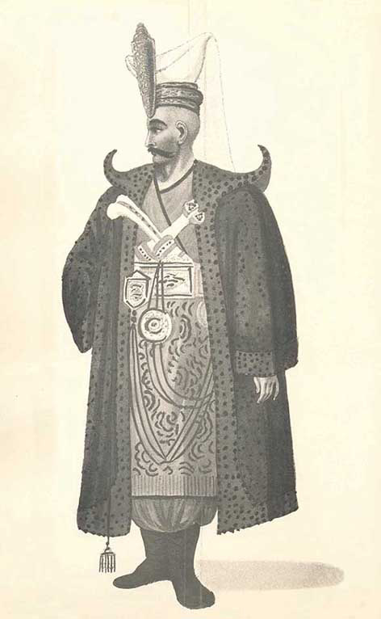
Yeniçeri Ağası
Yeniçerilerin Bektaşilerle olan yakınlıklarının tartışmasız olarak kabul görmesi, ocağın yapısal bozulma aşamalarında daha bir geçerlilik kazandı. Yeniçeri Ocağı’na Bektaşi Ocağı, yeniçerilere Tâife-i Bektaşiye vs. gibi isimler takılması, Bektaşilerin ocağa hulûl ile 94. Cemaat Ortası’nda babalardan birinin Hacı Bektaş vekili olarak makam tutması ve Pîr Evi’nde vefat eden babanın yerine seçilen yenisinin İstanbul’da Yeniçeri Ocağını ziyaret ederek sadrazam tarafından da kabûl edilmesiyle sonuçlanan belirli bir merasime tâbi tutulduktan sonra geri gönderilmesi gibi teşrifât34 ocak ve tarikatın 1826’da aynı kaderi paylaşmalarına kadar devam etmiştir.
Acemi oğlanların Türk üzerinden geri alındıktan sonra, Yeniçeri Ocağı’na intikalleri dışında saray hizmetlerinde (hassa bahçe - bostan – çamaşırhane – mutfak - fırın – ahır – mandıra - odun gemileri); ayrıca donanma gemilerinde, tophanede, suyollarında işçi olarak kemhacılar yanında çalıştırılmak üzere çıkmaya tâbi tutuldukları veya 1570’de Edirne’de Selimiyye Camii inşaatında amele olarak kullanılmak amacıyla ulûfeli olarak kaydedildikleriyle ilgili bilgiler, kendilerinden istifade edilme kanallarının çeşitliliğini gösterir.35
Osmanlı ordusu ve toplumundaki konumları: XVI. yüzyılda ordunun çok büyük bir kısmı tımarlı sipahilerden oluşmaktaydı. Bu durum haliyle yeniçerilerin önemini azaltmaz ve savaşlarda genelde önemli zayiat karşılığında sipahiler tarafından yumuşatılan düşmana vurulacak nihâî darbede kendilerine önemli bir rol düştüğü bilinir. Öte yandan zayiattan en ziyade korunan seçkin kıtaatın da yeniçeri askeri olduğuna şüphe yoktur. Eflak prensi Kazıklı Voyvoda’ya (III. Vlad) karşı sürdürülen mücadele esnasında (1476) Vlad’ın vahşice sürdürdüğü savaş nedeniyle ayrıca nasıl korktuğunu açıkça ifade eden yeniçeri Konstantin, özellikle Tuna’nın karşı kıyısında kalan padişahın (II. Mehmed), o ana kadar açılan top ateşi sebebiyle 250 yeniçerinin ölmüş olmasından da etkilenmiş olarak, öte yakada kalanların da ağır kayıplara uğrayabileceği endişesiyle ne kadar büyük bir sıkıntı içine düştüğünü dile getirmektedir.36 Zira yeniçeriler, ordu mevcudunun yüzde doksanını oluşturarak Osmanlı devletinin temel taşı ve belkemiğini teşkil eden maliyeti düşük timarlı sipahilere37 kıyasen eğitilmesi uzun zaman alan ve pahalıya mâl olan askerlerdir. Bu durumları, ocağın devşirme sistemine dayandığı klasik dönemlerin sonuna kadar geçerliliğini korumuş olmalıdır.
Devşirme teşkilatının Yeniçeri Ocağı ve saray için olmak üzere iki hizmet sahası bulunmakta olup saray için yapılan devşirmenin ocak için yapılanların sona ermesinden çok daha sonraları, hattâ Acemi Ocağı’nın ilgası tarihlerine kadar devam ettiği anlaşılmaktadır. Ocak için yapılan devşirmenin ise XVIII. yüzyıl ortalarına kadar önemsenmeyecek derecede az sayılarda olsa dahi uygulanmaya koyulduğu tesbit edilmektedir. Çeşitli belge ve kaynaklardan hareketle Acemi Ocağı’ndaki mevcûdât ile ilgili sağlam bir fikir edinmek mümkün olmaktadır. XVI. yüzyıl ortalarında sayılarının 4 bine ulaştığı, asrın sonlarına doğru 9 bine vardığı, XVII. yüzyılda ise 12 bini aştığı belirlenebilmektedir. Sayı yeniçeri mevcûdundaki artışa da işaret eder ve XVIII. yüzyıl içinde Acemi Ocağı’ndaki sayısal düşüş, 1666’da Batı ve Orta Balkanlar’da senelik devşirme sayısını 300-320 arasında öngören fermanın işaret ettiği üzere devşirme uygulamasının da azaldığını gösterir. Bunda muhtemelen ocağın savaş meydanlarında gözlenen başarısızlıklarından ötürü yapılan masraflara değmediği kanaatinin etken olduğu söylenebilir.38 Nitekim Acemi Ocağı’ndaki 1706 ve 1752 tarihli rakamlar 1860 ve 1818 efrâd arz eder ve genel toplam daha sonraki senelerde de yaklaşık bu sayı civarında kalır.39 Acemi Ocağı, Yeniçeri Ocağı’nın ilgasına kadar ayakta kalmış olmakla beraber, işlev değişikliğine uğramıştır. Yeniçeri Ocağı’nın kaldırılmasından sonra hâlâ mevcut olan Rumeli ve Anadolu Ağaları Bursa’ya sürülmüştür. Bir müddet daha saraya odun nakli işleriyle vazifelendirilmiş olarak ayakta kalan ocak, nihayet ocak ağalığının Hatab Eminliği’ne tahviliyle tamamen tarihe intikal etmiştir.40
Yeniçeri Ocağı’nın II. Mehmed zamanında kurumsal olarak gelişmesi yanında, bir dizi seferler sebebiyle sayısal olarak da artması kaçınılmaz oldu ve yaklaşık 5 bin gibi tahmin edilen sayı Fâtih’in saltanatı sırasında ikiye katladı. Sayısal artış Kanunî zamanında 12-13 bin olarak gösterilmekle beraber, bunların hepsinin birden sefere katılmaları söz konusu olmamıştır. Avrupa’daki savaş meydanlarında ateşli silahlarla donatılmış piyadelerin öne çıkması, yeniçeri sayısının önemli derecelerde artmasına yol açmış ve bunun sonucunda klâsik sistemden köklü uzaklaşmalar kaçınılmaz olmuştur. Nitekim daha III. Murad devri sonunda (1595) yeniçeri sayısı 25 bine varmış bulunuyordu.41 Bununla beraber, yaya askeri sayısındaki artışın neden olduğu maliyetin karşılanması, bu tarihlerde hüküm süren enflasyonun da etkisiyle büyük sıkıntılara yol açmıştır. Bu sayı (tüm ulûfeli kul tâifesi), yapılacak ödemelerin azâmetinden tedirginlik duyan ve kendi dönemindeki (XVII. yüzyıl ilk yarısı) gelişmeleri sorgulayan Koçi Bey’deki rakamlara göre 92 binden 200 bine çıkmıştır.42 Maaş ödemeleri artan sayılar doğrultusunda önemli giderler olarak kaldı.
1526 tarihi itibariyle 7. 886, Kanunî’nin ölümünden hemen sonraki (1567) artış neticesi olarak 12. 798, 1609’da 39. 282 ve 1660’ta 39. 470’i İstanbul’daki kışlalarda; geri kalan 14. 379’u vilayetlerde bulunmak üzere toplam 53. 849 kişi için yapılan ödemeler, verilen seneler itibariyle 15 milyon küsûr akçeden 100 ve dolayısıyla 133 milyon küsûr akçeye varmaktaydı.43 1514-1680 zaman dilimi içindeki sayılar genelde 10-60 bin arasında değişkenlik göstermekteydi.44
Ulûfe özel tanımlamasıyla anılan maaş ödemeleri, Nizamülmülk’ün Siyâsetnâme adlı eserinde askere verilecek maaşın üç ayda bir olması önerisiyle örtüşür45 ve muhtemelen bu uygulamanın ilham kaynağına işaret eder. Bununla beraber maaş ödemelerinin hangi mücbir sebeplerden ötürü üç ayda bir olmak üzere (senede dört kıst) yapıldığına açıklama getiren bir kayıt yoktur. Bunun finansman sıkıntılarından ziyade, kalemî (bürokratik) sebeplere dayandığını ileri sürmek mümkündür. Maaş zammı talepleri erken tarihlerden itibaren ağırlığını hissettirir. 1446 Buçuktepe Olayı ve 1481’de Fatih’in ölümüyle başlayan fetret, o sıralardaki siyasî çekişmeden de cesaret bulmuş olarak bunun açık bir isyan haline dönüşen ilk örneklerindendir.
Seferlerde, cülûslarda maaşlarına zâm, terakki ve bahşiş talepleri giderek âdet haline gelen davranışlara dönüşmüş, II. Selim’in tahta çıkışı esnasında Belgrad ve İstanbul’da cereyan eden 1566 hadiselerinde olduğu gibi, yeni padişahı ve devlet erkânını hiçe sayan davranışlar sergilenebilmiştir.
1514 seferinde Yavuz Sultan Selim gibi güçlü bir padişahın, vaktiyle kendisine taht yolunu açmış olan yeniçerilerin muhalefetiyle uğraşmak zorunda kaldığı,46 hattâ babası II. Bayezid’in sürekli huzursuzluk çıkartan yeniçerileri ortadan kaldırmayı dahi düşündüğü bilinmektedir.47 Erken tarihli bu tesbitler, 1622’de ocağın üzerinde ebedî bir leke olarak kalacak olan II. Osman’ın tahtan indirilmesi ve öldürülmesi hâilesinin,48 1703 asker - esnaf - şehirli ayaklanması neticesinde Edirne’de mekân tutan II. Mustafa’nın hal‘inin, Şeyhülislâm Feyzullah Efendi’nin ağır hakaretlerle katlinin,49 hattâ yeniçerilerin açıkça Osmanlı hanedanından yüz çevirmeleri ve Garb Ocakları misâli içlerinden birinin seçimle işbaşına geleceği bir “Cumhur Devleti” kurma seçeneğini tartışmalarının50 ve nihayet “Lâle Devri”ne son veren 1730 isyanı gibi büyük ihtilallerin (III. Ahmed’in hal‘i, sadrazam İbrâhim Paşa’nın idamı) habercisi gibidir.
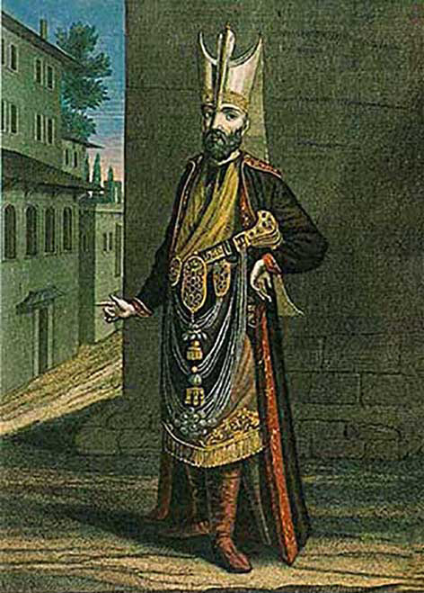
Aşçıbaşı
Yeniçeriler arasında zamanla güçlenen grup kimliği ve mensûbiyet duygusu, sıkı bir dayanışma içine girmeleriyle sonuçlanmış, birbirlerine hitap ederken kullandıkları yoldaş tabiri bu durumlarının işareti, ocak kazanlarını meydana çıkartmaları ise (Kazan Kaldırma) isyana niyetlendiklerinin göstergesi olmuştur. Taşra ve özellikle merkezdeki bu askerî güç giderek sosyal ve politik tabanda kök salmış olarak yönetimi de etkileyen başlıca unsur haline gelmiş, askerlik yeteneği zayıfladıkça siyasete müdahil ve siyasetçinin aleti olma hali kuvvet bulmuştur. Cevdet Paşa’nın Ekim 1884 tarihli olarak Berlin sefiri Sadullah Paşa’ya yazdığı mektupta dile getirdiği, “yeniçeriliğin Osmanlıların iliğine işlemiş olduğu ve ocakların asabiyet-i milliye makamına geçmiş olarak devlet işlerinin usûl ve fürû‘unu istîlâ etmiş” oldukları51 savı, böyle bir olumsuz gelişmenin âdeta özrü gibidir. Bazı tarihçilerin, XIX. yüzyıldaki çağdaş bir devlet yapısı kurmaya yönelik yenilenme girişimlerindeki hayatî zarûreti göz ardı ederek pek i‘tibar ettikleri bu niteleme, dolayısıyla yeniçeriliğin toplumun ve devletin içine nüfûz etmiş bir “asabiyet” hassası ve bir “sivil toplum örgütü” olarak takdimi; ocağa, ceberut devlet karşısında bir muhalefet cenâhı olarak halkın koruyucusu olduğu yakıştırmasıyla âdeta bir Robin Hood rolü biçilmesi, her halde hayalî bir söylemin ötesine geçemez.
Anadolu ve Rumeli / Balkanlarda müslim veya gayrımüslim halkın ezilmesinde yeniçeriliğin olumsuz bir rol oynadığı açıktır. 1804’te Sırp ayaklanmasına sebebiyet verecek bir şekilde reayanın baskı altında tutulmasında yeniçerilerin payı, bu isyanda devletin Sırplar’ın yanında yer almasıyla sabittir.52 Yakıştırılan hangi niteliğiyle olursa olsun artık modern devlet yapılanması içinde yer bulmasına imkân olmayan yeniçeriliğin, ilgasından sonraki zamanlar içinde hızla unutulduğu da bir gerçektir. Nitekim asrın ikinci yarısından itibaren yeniçerileri hatırlayan - o da Deli Petro’nun (ö. 1725) aynı şekilde devletin başına bela kesilen Streltsi askerinin imhası (1698) kıyaslaması sebebiyle - olumsuzluklarına dâir kara bir tablo çizdiği Tarih’inde yazdıklarını unutmuş görünen Cevdet Paşa dışında âdeta kimse kalmamış gibidir. Bu anlamda, yürüyüş tarzının garipliği içinde müzikal hiçbir özgün metninin günümüze intikal etmediği mehterlerinin dahi uydurularak, ancak II. Meşrutiyet Devri’nde yeniden ortaya çıkarılmış olduğunu hatırlamak yeterlidir.
XVI. yüzyıldan itibaren hükümdarların iktidar ve konumu itibariyle artık marjinal ve sembolik bir hale geldiği, kamu hizmeti ve hükümetin günlük işlerinden el çektiği53 zamanında yapılmış tesbitler olarak dikkat çekerler. 1580’den ocağın ilga tarihine (1826) kadar geçen zaman içinde yeniçeri nüfûzu altında devletin uğradığı varsayılan ve hattâ “Osmanlı rejiminin esasları yeniden kurulmuştur.” iddiasında bulunulmasına yol açabilen54 köklü değişimin ve hükümdarın piramidin tepesindeki konumunu kaybetmiş olarak kendini yaygın bir idarî örgünün ortasında sıradan bir monark halinde bulmasıyla başlayan sürecin -gerçek dışı ve hayalî bir tanımlamayla- “İkinci İmparatorluk” dönemi olarak nitelenmesi,55 yine de âmil sebebin yeniçeriler olduğu olumsuzluklara işaret etmesi açısından önem taşır. Öte yandan, “toplumsallaşan yeniçerilik” ile merkezin yenilenme girişimleri arasında eski ve yeni mücadelesine dönüşen reform uygulamalarının “halkın hukuku ile devletin despotizmi” arasındaki bir çatışma olarak gösterilmesine, yeniçeri ihtilallerinin hattâ “Osmanlı anayasal mücadelelerinin bir parçası” ve yeniçeri merkezli muhalefetin ise aslında “aydınlanmacı despotizme karşı kolektif hak arama mücadelesi” olduğu tarzındaki zabtsız iddialar,56 yabancı elçilik mensuplarının gözlemleriyle desteklenmek istenmektedir. Nitekim Avusturya elçiliğinde 1802’den beri “diloğlanı” olarak vazife gören ve 1822’de bizzat elçi olarak atanacak olan57 Franz von Ottenfels’in Kasım 1808 tarihli raporuna yapılan atıf bu anlamdadır. Ottenfels, Yeniçeri Ocağı’nı, “Osmanlı halkının çekirdeği ve onun devlete karşı özerkliğini sağlayan silahlı gücü (nazionel militz)” olarak takdim etmekte; yeniçerileri daha çok “cumhuriyetçi (republikanisch) bir zihniyete, Nizâm-ı cedîd’i ise mutlakiyetçi despotik ilkelere” meyyâl olarak göstermektedir.58 Ancak meseleye nefret edilen ve amansız bir savaş sürdürülmekte olan Fransa ve onun bütün monarşileri tehdit eden ihtilal fikirlerinin etkisi altında bakan Ottenfels’in, bu durumda yeniçerileri meşrûi hükümdarları tahtından eden ve ezilmeleri için savaşılan ihtilal Fransa’sının, kendi krallarının kafasını kesen cumhuriyetçilerine benzettiği, dolayısıyla aslında olumsuz bir kimlik çizdiği gözden kaçmaktadır. Kaiser Franz’ın birkaç ay sonra İmparator Napolyon’a savaş açacağı bir dönemde59 başka bir şey söylenmiş olması da zaten beklenemezdi.
Alemdar Mustafa Paşa’nın öldürülmesinden (16 Kasım 1808) sonra, yeniçerilerin uzun bir idâm listesini geri çeviren ve içinde bulunduğu o zor anda dahi belirli bir asabiyet sergileyen II. Mahmud’un, ocağın varlığını devam ettirmesine karşı olmadığını, ancak kendilerinden mutlak bir itaat beklediğini, aksi halde başşehri Anadolu’daki bir yere taşıyacağını ifade ettiğine dâir yine Ottenfels’e ait olan bilgilendirme,60 “esnaf takımından ricâl hüddâmına kadar halkının neredeyse yarısının ocağa kayıtlı olduğu ve hiçbir iş yapmadan ulûfe aldıklarını” belirttiği İstanbul’da,61 “yeniçeri partisi”nin mutlak gücü ele geçirmiş olduğuna özellikle dikkat çekmesi ayrı bir önem taşır. Bu durumda, klâsik dönem sonrası yeniçeriliğin halkın hak ve hukukunu korumaktan ve benzer yakıştırma meziyetlerle yüklenmiş olmaktan ziyade, kendi grup çıkarları doğrultusunda, hayatî bir gereklilik arz eden her türlü reformcu açılımlara, başka bir deyişle “düzen değişikliğine” karşı kazan kaldıran silahlı bir örgüt derekesine düştüğü sonucuna varılmasının daha isabetli ve eldeki verileri zorlamayan gerçekçi bir tanı olacağı açıktır.
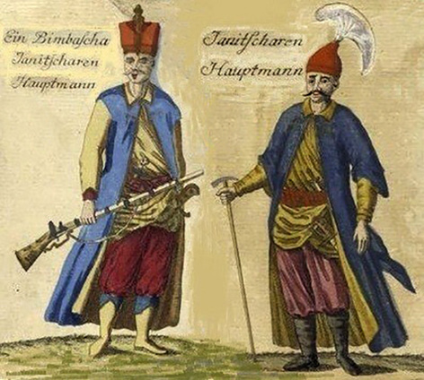
Yeniçeriler
Silah ve eğitimleri: I. Kosova Savaşı’nda (1389) sayıları 2 bin kadar olan yeniçeriler ok ve yay ile silahlandırılmış olup ateşli el silahlarıyla tanışmaları II. Murad zamanında; çoğunun ateşli silahlara geçmesi ise XVI. yüzyılda olmuştur. Tüfek cinsi ilkel bir ateşli silahın ilk kullanımının II. Kosava Savaşı’nda (1448) olduğuna dâir kesinlik vardır.62 Öte yandan 1455 gibi daha erken tarihlerde özellikle serhat kalelerinde tüfenk-endâz yeniçeri askerlerinin yerleştirildiği bilinmektedir. Novaberda (Novo Brdo) Kalesi’ne konuşlandırılan diğerleri yanında 10 yeniçeri tüfekçisi, muhtemelen bu anlamda ilk tüfekçi birliğidir. İdris-i Bitlisî’nin (yazılımı 1506) Fatih devrindeki askerî teşkilatından söz ederken, tüfekçi yeniçeri askerlerinin düşmana korku saldığını kaydetmesi, bu gelişmeyi doğrular.63 1526 Mohaç Muharebesi’nde 4 bin tüfekli yeniçeri yer almaktaydı. Kanunî’nin 1533 Irakeyn Seferi’nde önden yola çıkan Sadrazam İbrahim Paşa’nın yanında uzun ve kısa namlulu olmak üzere tüfek taşıyan yeniçeri sayısı 1. 020 idi ve arkasından gelen Kanunî’nin yanında yine yeniçeriler için bini uzun namlulu olmak üzere 4 bin tüfek bulunuyordu.64 Avrupa’da bu seferle ilgili olarak zamanında yapılan neşriyatta ise, muhtemelen 10 bin katılım içinde 9 bin yeniçerinin tüfekli olduğuna yer verilmekteydi65 ki bunun moral bozucu bir havadis olduğu açıktır. Bununla beraber, ok ve yay hükmünü 1650’lere kadar sürdürmüştür. Fazıl Ahmed Paşa’nın 1663-1664 seferinde cebehâneden 11 bine yakın tüfek ve 861 yay (56 binden fazla ok) verilmesi ateşli silah ağırlıklı donanıma işaret eder. Mohaç’ta sıralar halinde art arda dizilmiş olan yeniçerilerin peş peşe açtıkları salkım-saçak ateşi ölümcül etkiler vermiş ve topçuların isabetsizliği yanında nihaî zafere ulaşılmasını temin etmiştir.66 Bu durumda Avrupa’da varsayılan Askerî Devrim’den bağımsız ve çok daha erken tarihlerde Osmanlı’nın kendi askerî devrimini yaptığını söylemek abartı olmayacaktır.
Ocak 1552 tarihli olarak yeniçeri ağasına yazılan hükümden de anlaşılacağı üzere yeniçeriler haftada bir kez talim ile tüfek kullanma yeteneklerini epey erken tarihlerden itibaren geliştirmekle yükümlü tutulmuş bulunuyorlardı.67 Böyle olmakla beraber bu, XVII. yüzyılın başlarında terk edildi ve sadece büyük seferlerden önce tüfek talimi yaptırılmaya başlandı. Beylerbeylerine gönderilen hükümlerden eyaletlerdeki yeniçerilerin de atış talimi eğitimi almalarına çalışıldığı anlaşılmaktadır, ancak bunların sıkça tekrarının sistemin bozulmakta olduğuna işaret ettiği de açıktır. Yine de XVI. asrın sonlarına kadar Avusturya ordusundakilerden daha uzun olduğu belirtilen arkebüz tüfeklerini maharetle kullanabildiler. Öte yandan karşı tarafın bu zafiyetini süratle gidermiş olduğu 1596 Haçova Muharebesi’nde ortaya çıktı; top ve arkebüz kullanımında Osmanlıları aştıkları gözler önüne serildi. Düşman askerinin çoğunun piyade ve tüfek donanımlı (tüfenk-endâz) olduğu artık daha sıkça kayıtlara geçmeye başladı. Düşman cephesindeki gelişmelere cevap verebilmek beklentisiyle reayadan, sekban, saruca veya tüfenk-endâz adıyla anılan, kaynaklarda genelde levent olarak geçen silahlı piyade birlikleri oluşturulmaya çalışıldı. Ancak bu önlem yeniçeri askerinin kalitesini düşürdü. 1593-1697 arasında yaşanan büyük muharebelerden yalnızca iki zafer (1596 Haçova ve 1664 Sent Gothar) ve 12 yenilgi ile çıkılmış olması bunun göstergesi oldu. Yine de muhasara savaşlarında üstünlük daha uzun bir zaman Osmanlıların elinde kaldı. 1552 Tımışvar, 1566 Sigetvar, 1596 Eğri, 1600 Kanije fetihleri bu hale iyi birer örnek teşkil eder.68
Tüfekli yeniçeri askeri Osmanlı komşuları içinde 1578-1590 arasında Azerbaycan’ın denetimi amacıyla sürdürülen savaşlar esnasında İran tarafından örnek alınmıştır.69 Tüfekli asker oluşumu İran yanında ayrıca en çok Rusların dikkatle takip ettikleri bir konu olmuştur. Özellikle IV. İvan dönemi (1530-1584) askerî örgütlenmelerinde Osmanlı ordu teşkilatı taklit edilmek istenmiştir. Yeniçerilere benzeyen tüfekli asker ihdası bu anlamdadır. Bunların sayısı 1560’larda 12 bine varmış olup yeniçerilere olan benzerliği pek çok tarihçiler yanında bizzat Deli Petro tarafından vurgulanmıştır.70
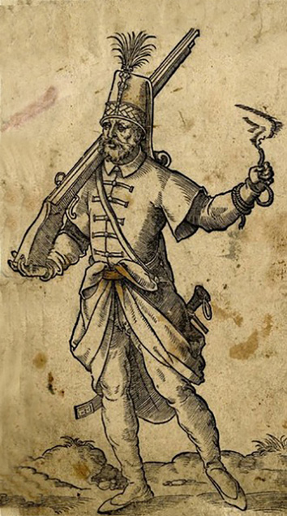
Silahlı Yeniçeri
Ocak yönetimi ve yapısal özelliği: Yeniçeri Ocağı’nın bünyesindeki gelişmeler doğrultusunda teşkilat ve yönetimi de çeşitli değişikliklere uğramış olarak zamanla tekemmül etmiştir. Kendi içinde idarî ve adlî sahada özerk bir yapıya sahip bulunan Yeniçeri Ocağı, yeniçeri ağası tarafından idare edilmekte olup ocak içindeki her türlü yaptırım gücü onun riyasetindeki yetkili kurulun (Ağa Divanı) elinde toplanmış bulunuyordu.71 Bu anlamda yeniçerilerin kovuşturma ve gereğinde cezalandırma işlemleri de ancak yeniçeri ağasının emriyle yerine getirilir; padişah dahi olsa sivil iktidarın müdahalesi ancak yeniçeri ağası vasıtasıyla icrâ edilirdi. Cezalandırılmalar ve infâzlar da gizlice uygulanırdı. XVI. yüzyıl sonlarına kadar azillerinin bizzat padişah tarafından yapılması söz konusu olan ve bu işin sadrazamlar tarafından icrâsının hoş karşılanmadığına dâir kaynaklarda kayıtların yer aldığı yeniçeri ağalarının tayini, ilk dönemlerden itibaren genelde sekbanbaşılardan yapılmıştır. Bu duruma, II. Bayezid ve Yavuz Sultan Selim zamanlarında son verildiğine dâir iki kayıt bulunmaktadır. Uzunçarşılı’ya göre, sekbanbaşılıktan yeniçeri ağası olan Bayezid Ağa’nın yeniçerileri tahrik etmesi sebebiyle, bunların ağalığa geçmelerine son verilmiştir.72 Benzer bir hadiseyi Hammer, Yavuz zamanı için anlatmaktadır. 1514 seferindeki isyankâr hareketleri ve bazı ricâlin kendilerini desteklediklerine dâir tahkikatı ısrarla sürdüren Sultan Selim, nihayet diğer suçlular yanında ocağın ağası bulunan Sekbanbaşı Balyemez Osman Ağa’yı da idam ettirir (18 Ağustos 1515) ve şimdiye kadar uygulanan sekbanbaşılarının ağa olması usûlünden vazgeçerek sarayda güvenini kazanmış Mirâlem Yakub Ağa’yı yeniçeri ağası olarak atar (7 Eylül 1515) ve böylece bundan sonraki tayinler Kulkethüdası, Zağarcıbaşı, Saksonçubası, Turnacıbaşı olarak sıralanan Katar Ağaları içinde silsile yürütülerek yapılmaya başlanır.73 II. Bayezid ve Yavuz Selim devirlerindeki yeniçerilerin uygunsuz hareketleri göz önüne alındığında bu iki kaydın birbiriyle örtüştüğü açıktır. Ocak dâhilinde oluşan bu usûle daha sonraki dönemlerde genelde riayet edilmiştir.
Bozulma dönemlerinde kendi iç merâtibinden hareketle yapılan ağa atamasının ocağın denetim altında tutulmasında zafiyet oluşturduğu I. Mustafa ve II. Osman hadiselerindeki hal‘, iclâs ve padişah katliyle sonuçlanan isyanlarda o sıralardaki yeniçeri ağalarının ocak içinden gelmiş olmasının da payı bulunduğuna dâir yapılan değerlendirmeler74 bu anlamda önemlidir. Nitekim beğenmedikleri ağalara - muhtemelen eski isimlerinden hareketle - lakap takmaları (Hasan Ağa için “Apostol”, Halil Ağa için “Vasilaki” (1590) disiplin gevşekliğine delâlet eden emarelerdendir.75 Bununla beraber, fevkalade ve sivil iktidarın kendini güçlü veya askerî kesimin kusurlu hissettiği durumlarda kaide hükmüne girmiş uygulamaların dışına çıkılabilmekteydi.
Ocağın ilk ağasının kim olduğu, kuruluşun aşamalar halinde gerçekleşmesinden ötürü tesbit edilmesi zor bir husustur. Ocağın son ağası ise Mehmed Celâleddin Ağa (ö. 1863) olup bu zât ilga hadisesinden sonra daha uzun zamanlar yaşamış ve Şeyhülislâm Seyyid Mehmed Sadeddin Efendi zamanında (1858-1863), Bâb-ı Meşihâttaki bir mürafaada kendisini ifşâ etmiş olmasından ötürü tanınmış ve aylık almakta olduğu 1000 kuruşluk cüz‘i emekli maaşı 7.500 kuruşa yükseltilerek ömrünün son senelerinde rahat etmesi temin edilmiştir.76 Kanunnameye göre yeniçeri ağaları işbaşındayken genelde 500 akçe yevmiyyesi, senede 8.000 kuruş koyun emânetinden geliri, Tuna Yalısı’ndan senelik 50 bin akçelik zeameti, ayrıca Yeniçeri Beytülmâli’nden sülüsü, Ağakapısı’nda haremli husûsî ikametgâhı bulunmaktaydı.77 Terfi ederek ağalıktan ayrılmaları halinde XVI. yüzyılda genelde kaptan-ı derya veya beylerbeyi olurlardı. Vezir ve paşalığa (Ağa Paşa) yükselmeleri, nihayet sadrazam olmaları eski düzen ve uygulamaların geçerliliğinin kalmadığı dönemlerde sıkça rastlanan örneklemelerdendir. Mütekaid (oturak) olduklarında ek gelirlerini kaybetmekle beraber, kendilerine XVIII. yüzyıl sonu ile XIX. yüzyıl başlarında 100-200 kuruşluk bir aylık gelir bağlanırdı. Bu mesela, III. Selim zamanında mühendishane hocalarının diğer maaş ve ücretlere kıyasen yüksek addedilmesi icap eden aylık gelirleriyle örtüşmekte olan bir meblağdır.
Yeniçeri ağasından sonra gelen Ocak Ağaları veya belirli bir merâtıb takibinden ve terakkilerde silsile yürütülmesinden ötürü yeniçeri argosunda Katar Ağaları olarak da anılan üst kademedeki ocak zâbitleri, Yeniçeri Kâtibi, Ocak İmamı, Solakbaşı, Bölükbaşı, Baş Yayabaşı, Kethüdayeri Ağa, Muhzır Ağa, Başçavuş Ağa, Haseki Ağa, Turnacıbaşı, Saksoncubaşı, Kul Kethüdası gibi isimler taşırlar.78 Bunlar yeniçerilikten yetişmiş ve bu üst kadrolara çıkmış olarak ocağın yönetiminden birinci derecede yetkili ve sorumluydular. Yeniçeri Efendisi de denilen Yeniçeri Kâtibi Yeniçeri ve Acemi ocağının maaş ve esâme kayıtlarının tutulduğu kalemin âmiri ve Ağa Divânı’nın üyesi olarak, buradaki davalarda yargılama görevini üstlenir. Bu özelliklerinden ötürü Katar Ağaları kadar önem taşır ve diğerlerine takaddüm ederdi.
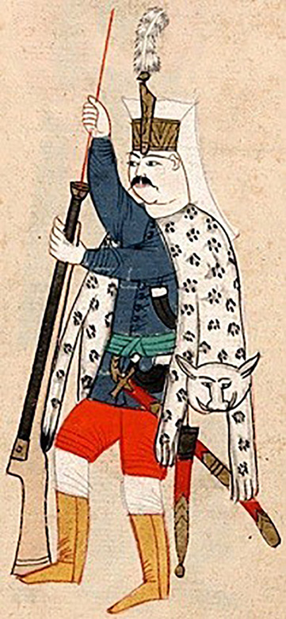
Tüfeğini temizleyen Yeniçeri
Şehrin inzibâtî meselelerinin giderilmesi bâbında üstlenmiş olduğu vazife yanında, yeniçeri ağaları protokoldeki üst konumunun da göstergesi olarak selâmlık merâsimlerinde padişaha refakat ederler, bu haklarına kararlılıkla sahip çıkarlardı. 5 Nisan 1805’de Selimiye Câmii’nin ibadete açılışı münasebetiyle III. Selim’i Nizâm-ı cedîd askerinin selâmlayacağı söylentileri büyük bir hoşnutsuzluk oluşturmuş ve açılışın iptâline yol açmıştır. Ocağın imhasını takip eden ilk selâmlık resminde (16 Haziran 1826) ise, padişahı selâmlamak vazifesi topçu ve humbaracı birliklerine havale edilmiştir. Yeniçeri ağası, ulûfe dağıtımı ve özellikle bunun bir elçinin huzûra kabûlüne denk düşen Galebe Divanı’nda Ocağın diğer üst komuta kadrosuyla (Katar Ağalarıyla) beraber devlet sarayındaki merasimin baş aktörleri arasında yer alırdı. Ramazan aylarının 15’inde yeniçerilere dağıtılan binlerce tepsi baklava ise ocağa gösterilen itibarın masraflı bir nişanesiydi. Yabancı elçiliklerin korunması vazifesi de yeniçeri ağalarının vazifeleri arasındaydı. Ağanın, padişahın bizzat çıkmadığı seferlerde yer almaması âdeti XVI. yüzyılın sonlarına doğru Sinan Paşa’nın sadareti esnasında terkedilmiş (1594) ve dönemin yeniçeri ağası olan Lala Mehmed Ağa sefere katılmış olarak bir ilki başlatmıştır.79 XVIII. yüzyıl son çeyreğindeki Rus ve Avusturya savaşlarında paşa rütbesini ihrâz etmiş olarak serdarlık vazifesini yürütme halleri sıkça görülür olmuştur.
Kışlak tabir edilen yeniçeri odaları fetihten önce Edirne’deydi. İstanbul’da Eski ve Yeni Odalar adı altında iki kışlaları bulunan yeniçerilerin koğuşlarına Oda tabir olunurdu. Ahşap ağırlıklı olarak inşa edilmiş bulunan ve asker olmayanlara içeri girişin yasak olduğu bu binalar 15 Haziran 1826’daki hadisede (b. Vak‘a-i Hayriyye) tamamen tahrib ve ihrâk edilmiştir. Yeniçeri taburlarına ise Orta (veya Bölük), kumandanlarına genelde Çorbacı denilmekteydi. Orta sayısı zamanla artmış, Kanunî döneminde 165 ortaya varmış, nihayet 196 sayısında sabit kalmış olmakla beraber, bu I. Mahmud döneminde (1730-1754) 199 olarak gösterilmektedir.80
Fatih devrinden beri zorunlu gelişmeler ocağın 196 orta halinde üç ana grup altında toplanması sonucunu vermiştir. 1) Cemaat veya Piyâdegân; Fâtih’in ilk dönemlerinde ihdas ile sayıları zamanla 101 ortaya çıkmıştır. 2) Sekban; sarayın av köpeklerine bakmak üzere oluşturulan küçük bir ocak olup zamanla 34 ortaya çıkmıştır. Fatih tarafından yeniçeri ocağına ilhak edilmiştir. 3) Bölük veya Ağa Bölükleri; II. Bayezid devrinde oluşmaya başlamış, zamanla 61 ortaya çıkmıştır.81 Yeniçeri Ocağı’nın süvârileri ise Altı Bölük halinde teşkilatlanmış bulunuyordu.
Odaların mevcudu ilk zamanlarda 60-70 kişiden oluşmaktaydı. Bu sayı daha sonraları 100 kişiyi bulmuştur. Yeniçeri kışlasının ortasında yer alan câmi Orta Câmi (Câmi-i Miyâne) adıyla anılır ve dinî hizmetler için imam, hatib, müezzin gibi hüddâmı yeniçerilerden oluşurdu. Bu câmi aynı zamanda bir meşveret mahalli, isyan günlerinin merkezi gibi de kullanılmış olup II. Osman tahttan indirildikten sonra burada ikinci defa iclâs edilen deli amcası Sultan Mustafa ile beraber olmuştur (20 Mayıs 1622). Yeniçeri kıyafetleri devlet tarafından temin edilmekle beraber, ortalarda kendi aşçıları vasıtasıyla, herkesin katılımıyla toplanan paradan ortak yemek pişmekteydi. Dayanışma fonu olarak maaşlardan kesilen paraların toplandığı ve faizle işletildiği Orta Sandığı yeniçerilerin çeşitli ihtiyaçlarını karşılamak üzere aldıkları krediler için kullanılırdı. Yeniçeri ortaları çeşitli amaç ve hizmetler ifâsı için İstanbul dışında da vazifelendirilmiş veya kalıcı olarak yerleştirilmişlerdir. Yeniçeriler arasında sıkı bir dayanışma ve yoldaşlık hukuku hâkim olmasından ötürü ocak halkı dışarıya kapalı bir kurum olarak her türlü tehdit karşısında ortak korunma refleksi gösterirlerdi. Bu sebepten ocağı karşılarına almak padişah dâhil bütün devlet adamlarının kaçındığı bir husus olmuştur.
Yeniçerilerin Anadolu’da kolluk gücüne ve genelde sosyal ve siyasal bir organ haline dönüşmeleri: Yeniçeri Ocağı’nın XVII. asırdan itibaren askerî bir güç olarak gerileme ve bozulma dönemine girdiği varsayılmakla beraber, bunun daha ziyade ocağın durumunun bir önceki yüzyıl ile kıyaslanmasından kaynaklandığı açıktır. Bozulmanın önemli bir sebebi olarak takdim edilen yeniçerilerin piyasaya açılmaları, yakıştırılan deyişiyle esnaflaşmaları, dolayısıyla başta ticaret olmak üzere askerî olmayan işlerle uğraşmaları aslında XVI. yüzyıl sonlarında başlayan bir gelişme olmuştur.82 Nitekim Yeniçeri Ocağı’nın piyasaya hâkim esnaf camiasından olmalarının sefere çıktıklarında pazarcı kıtlığına yol açacak boyutta olduğu, dönemin tarihçisi Selanikî tarafından dile getirilmiştir (1004/1596). Selanikî, yeniçerilerin sefere çıkması sebebiyle şehirde esnafın azalmasından ötürü başlayan pahalılıktan söz eder ve bunun pazarcıların hepsinin asker kökenli (sipahî, yeniçeri, cebeci, topçu ve arabacı) ve onların ortağı veya sermayedârı olmalarından kaynaklandığını belirtir, böylece yeniçerilerin esnaflaşmasıyla ilgili yargılara geçerlilik kazandırır.83
Geçen yüzyıllardan beri ocağın “bozulma” nedenleri olarak ileri sürülenlerin artık ana etken olma anlamında büyük ölçüde geçerliliği kalmamıştır. Ocağa yabancı (Türk/ecnebî) girmesi, böylece eski itaat ve disiplinin kaybolması, hülâsa devşirme sistemine dayanan özgün halinden uzaklaşma, evlenip çoluk - çocuğa karışmaları, ticaret ile uğraşır olmaları, bunun da neticesi olarak askerlik ve talimden uzak durmaya başlamaları bu tür nedenlerin başında yer alırlar. Yeniçeri Ocağı’nın rolünü pek abartmış olan Avrupalı yazarlar da haliyle ocağın devşirme kökenine, dolayısıyla Hıristiyan karakterine vurgu yaparak, bozulmayı özellikle devşirme usûlünün terk edilmesiyle izah etmeyi tercih ederler, hattâ önemli muharebelerin kazanılmasındaki başlıca unsur olarak yeniçerileri öne çıkartırlar. Bu bağlamda mesela Çaldıran muzafferiyeti (1514), Hıristiyan kökenli yeniçerilerin Şah İsmâil’in Türk kökenli askerlerine, yani “Hıristiyanların Türklere” karşı kazandıkları bir zafer olarak takdim edilir.84
Bağlamından koparılmış olarak tek başına öne çıkartılan gerekçelerle ocağın bozulma sebeplerinin ortaya konulmasına imkân yoktur. Bu hususta çeşitli nedenlerin karşılıklı etkilerinin hesaba katılması gerektiği ve bir kurumun tek başına ele alınarak yalnızca kendi kanunlarına dayanarak açıklanmaya çalışılmasının yanıltıcı sonuçlar vereceği, daha 1947’de yazdığı bir makalede Mustafa Akdağ tarafından dile getirmiş olmakla beraber,85 bu fazla dikkate alınmamıştır. Akdağ’a göre, ocağın ilk zamanlardan itibaren oluşmuş bir kanunnamesi veya herhangi bir padişah tarafından konulmuş bağlayıcı bir metni mevcut değildir, dolayısıyla ihtiyaç duyuldukça konulan hükümlerin zamanla kanunname kılığına sokulmuş olması söz konusudur. Bunların müstakilen tedvin edilmiş geç tarihli olarak (I. Ahmed devri, 1603-1617) tek örneği olan Kavânin-i Yeniçeriyân ise, daha çok Yeniçeri Ocağı’nın bozulma sebeplerini anlatan ve eski düzene geçilmesi için başta devşirme sisteminin ihyası olmak üzere neler yapılması gerektiğini sıralayan ve içerik itibariyle kanunnameden ziyade “Siyâsetnâme” özelliği taşıyan bir metindir.86 Kanun zarûreti XVI. asrın sonlarından itibaren duyulmaya başlanmış, olumsuz gelişmelerin eski dönemleri idealleştirip yeniliklerin bid‘ad olarak görülmesine yol açmasından ötürü, kadîm kanunların ihyâsı talepleri bu yüzyıldan sonra genel bir söylem halini almıştır.87
Kanûnî’nin şehzadeleri Bayezid ve Selim arasında geçen taht adaylığı mücadelesi (1559) ve Bayezid isyanının bastırılmasından sonra, çok daha önceleri serhad kalelerinde müstahfız olarak vazifelendirildiğine değindiğimiz yeniçerilerin, yasakçı ve korucu adı altında Anadolu’nun her tarafında yerleştirilmeye başlanması, zamanla önemli sonuçlar veren bir uygulama olmuştur. Buralardaki yeniçeriler çeşitli nedenlerle kalıcı hale geldiler ve vilayetlerde güvenlik giderek timarlılardan alınarak ocaklıya havale edilir oldu. Timar sisteminin işlevini kaybetmesi nedeniyle oluşan boşluğun doldurulması işinin kapıkullarına yüklenmesi, bunların eski kanunlarına riâyet etmelerini daha da zora sokan bir gelişmeydi. Öte yandan ocağın giderek artan asker sayısını devşirme sisteminin kısıtlı imkânlarıyla karşılanması da artık mümkün değildi ve böylece devşirme kaynağı dışından asker temini kaçınılmaz olmaktaydı. Bu nedene dayanan bir “bozulma” sürecinin ise daha Kanunî devrinde başlayan bir gelişme olduğu bilinmektedir. Bozulmanın başka bir önemli nedeni olarak gösterilen yeniçerilerin “esnaflaşması” olayı da ekonomik gelişmeler ve fiyat hareketleri ışığında ele alınmalıdır. Maaşlar ve hayat pahalılığı ilişkisinin uzun bir zaman dilimi içinde birincisi aleyhine bir gelişme katettiği gözlenebilmektedir. I. Murad (ö. 1389) zamanına nazaran III. Murad (ö. 1595) devrinde her şeyin değeri en az 10 misli artmış olduğundan hareketle, II. Murad zamanında günde 2, III. Murad devrinde ise 7 akçe olan yeniçeri maaşının fiyatlardaki artışa cevap verebilecek derecelerde yükseltilmesi halinde, günde en az 20 akçe olması gerekeceği hesaplanmış bulunmaktadır.88 Bu hesap, ilk devirlerden itibaren yürürlükte olan sistemin, özellikle XVI. asırda kendini hissettiren pahalılık ve bununla bağlantılı olarak ortaya çıkan sosyal ve ekonomik sıkıntılar sebebiyle artık ayakta kalmasına imkân olmadığını açıkça göstermektedir. Oluşan pahalılık ve yetersiz kalan ulûfeler meselesi, III. Selim döneminde (1789-1807) oluşturulan talimli askerin gerekliliğini ele alan risalelerde de yer almaya devam etmiştir.89
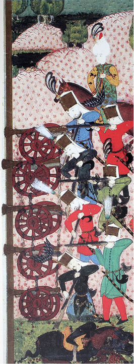
Top ve tüfek talimi yapan Yeniçeri
XVII. yüzyıl İstanbul kadı sicillerine dayanarak İstanbul esnafı hakkında yapılan bir çalışma, yeniçerilerin esnaflaşmasının bu yüzyıl başından itibaren büyük bir ivme kazandığı ve yüzyılın ikinci yarısından sonra yeniçerilerin esnaf ve zanaatkâr olarak loncalarda da temsil edilmekte olduğunu açık bir şekilde ortaya koymuştur.90 Öte yandan askerlikle ilgisi olmayan pek çok kişinin vergilendirme, yargılama ve toplumsal konum itibariyle pek çok faydaları beraberinde getirmesinden ötürü kendini Yeniçeri Ocağı’na kaydettirmeye çalıştığı bilinmektedir. Esnaf kefalet defterleri üzerine yapılan çalışmalar bu anlamda da ilginç sonuçlar verebilmektedir. Nitekim bu defterlere kayıtlı dükkân sahibi İstanbul esnafının bir kısmının adres olarak yeniçeri ocağını göstermiş ve hattâ bazen hangi bölüğe mensup olduklarını da belirtmiş olmaları, bunların Yeniçeri Ocağı’na yalnızca ismen kayıtlı olmadıklarını ve ocakla olan bağlantılarının fiilen devam etmekte olduğunu açığa çıkartmıştır. Esnafın da kethüda, yiğitbaşı gibi yöneticilerini genelde ocak halkından seçmeyi tercih etmeleri, yeniçeri gücünden faydalanmak istendiğinin göstergesidir.91
Yeniçerilerin ticaret ve zanaatla meşgul olmaya başlaması ilk başlarda loncalar ve esnaf tarafından doğal olarak iyi karşılanmamış olduğu düşünülebilir. Bazı yeniçerilerin piyasa şartlarını hiçe sayarak ticarette kaba kuvvet kullanarak para kazanmaya çalışması ve yeniçeri statüsünün getirdiği imtiyazların haksız rekabete sebep olması büyük bir ihtimalle bunun başlıca nedenini teşkil etmekteydi. XVII. yüzyılın ikinci yarısında bu tip gerginlikler azalmış, hem yeniçerilerin esnaflaştığı hem de esnafın yeniçerileştiği iki yönlü bir süreç sonucunda İstanbul’un ticarî hayatında ve loncalarda esnaf yeniçerilerin varlığı artık kabul edilen bir gerçeklik haline gelmiştir.92 Esnaflaşmanın ekonomik olarak kaçınılmaz hale gelmesinin yanında, Anadolu’da asayişin sağlanması, suçluların takibi, cezalandırılmak üzere muhakemelere sevki de yeniçeri yasakçılarına havale edilmiş olarak kaldı ve dolayısıyla fiilî idare giderek timarlıların yerini alan ocak halkının eline geçti. Öte yandan az sayıda dahi olsa çok daha erken tarihlerde işyeri olarak dükkân kiraladıkları (1490) veya toprak sahibi olduklarına (1521) dâir örneklemeleri olan ekonomik boyutlu gelişmeler; şehir -köy- kasaba düzeyinde yerleşmeleri, toprak sahibi olmaları, çiftlikler kurmaları ve ticaret yapmalarıyla genellik buldu.93 Özellikle Anadolu, giderek kapıkulu olma iddiasıyla ortaya çıkan, huzur ve asayiş bozan, askerî imtiyazı kötüye kullanan bir kalabalığın mazarratına marûz kaldı. Akdağ’ın ifadesiyle, vilayetlerde yeniçerilerin yerleşmeleri halk-devlet ilişkilerinde sıkıntı oluşturdu.94 Ocağın sosyal bir katman olarak halk arasında yer etmesi giderek daha da yaygınlık arz etmeye başladığında, yeniçerilerin devşirme kökenli klâsik yapılarına ve eski durumlarına benzer bir yanları zaten çoktandır kalmamış bulunuyordu.
Olumsuzluk imajının yerleşmesi: Ana yerleşim merkezleri olmak hasebiyle İstanbul’daki konumları özellikle önem taşır. Şehrin ortasında (Şehzadebaşı-Aksaray-Horhor) yer alan büyük kışlaları Eski ve Yeni Odalar olarak anılır. Acemioğlan kışlaları da bunlara mücavirdir. Evlenmeler yaygınlaştıkça şehrin çeşitli mahallelerinde kiralık evler giderek artan bir yeniçeri taallukatıyla dolmaya başlar. Hanlar, bekâr odaları ve kahvehaneler diğer pek çok yeniçerinin veya onlarla aynı hakları maaşsız olarak paylaşan yeniçeri taslakçılarının, kapağı ocağa atmak isteyen işsiz güçsüzlerin, çeşitli kanunsuzluklara karışanların, hattâ çıkacak ilk siyasî kargaşanın nimetlerinden istifadeye muntazır şehrin avâmî kalabalığının çekim merkezi olur. Ticarethanelere, esnafın işyerlerine, limanlara yanaşan gemilere himayeye alma adı altında kendi özel işaretlerini asarak (Balta Asma), her ortanın kendi haraç kaynağını belirlemeleri gibi uygunsuzluklar, ev soygunları, her türlü hırsızlıklar yeniçeri isminin yanında giderek daha sık yer almaya başlar. Zaman zaman şahid oldukları veya duyumunu aldıkları tecavüzcülerin hakkından gelmek üzere kılıcına el atarak bizzat infâzda bulunan padişahların95 IV. Murad’ı hatırlatır tarzda kol gezmeleri, yeniçeri adına olumsuzluklar yükleyen kanlı izler bırakır.
Devlet hazinesinin büyük malî kayıplara uğramasına, iş ve mal sahiplerinin hoşnutsuzluk ve mağdûriyetine sebep olmasına rağmen III. Selim devrinde İstanbul’da 500 kadar meyhanenin kapatılması, buralarda “devlet sohbeti” yapılıyor olmasından ziyade, özellikle asayiş konusunda atılan bir adım olarak değerlendirilmelidir.96 Şehirde sıkça görülen yangınlar ise genelde kundaklama eseri olarak ve belirli bir hoşnutsuzluğa işaret etmek üzere yeniçerilerin vebâlinde kalır. Protestolarını, devlet ricaline yöneltilen tehditlerini yazılı varakalar halinde sağa sola, cami duvarlarına ve halkın çokça dolaştıkları yerlere bırakmaları, XVIII. yüzyıl sonlarına doğru daha sık görülen bir yenilik olur.97 Yeniçerilik şehrin külhânî kültürünün ve kendine özgü edebiyatıyla argosunun kaynağını oluşturur. “semer devirme”, “baklava alayı”, “hamam baskını” “balta asma”, “yeniçeri kahveleri”, “hane - konak baskınları” “her türlü tecâvüz” ve “her türlü rezâlet” yeniçeri şehir eşkıyalığının kara safhasını teşkil eder.98
XVIII. yüzyılın son çeyreği; Küçük Kaynarca (1774), Kırım’ın Rusya tarafından ilhakı (1783), Ziştovi (1791) ve Yaş (1792) antlaşmalarıyla bitecek olan ve 1768’de başlayan bir dizi savaşla geçti ve yeniçeri ordusunun askerî bir değerinin kalmadığını gözler önüne serdi. Başta dönemin resmî tarihçilerinden ordu ile beraber sefere katılan Enverî ve Vâsıf olmak üzere kayda geçirilen, yeniçerilerin askerlikle alakası olmayan davranışları, 1768’de başlayan seferin daha ilk anlarında görülmeye başladı. Dönemin büyük askeri Prusya kralı II. Friedrich’in (ö. 1786) biraz da alaycı bir tavırla Rusların da pek iyi durumda olmadıklarına telmihen dile getirdiği, “körlerle tek gözlülerin” savaşı yakıştırmasında kastedilen tek gözlü olma hali yine de Rusları, nihayet Karadeniz’e açılacak, daha sonra ilhak etmek üzere Kırım’ı önce bağımsız hale getirecek ve ağır bir savaş tazminatı kabul ettirecek derecelerde güçlü kılmaktaydı. Kırım’ın ilhakının resmen tanınması (Ocak 1784) ve anında savaşla mukabele edilememesinin başında askerî zafiyet gelmekteydi. Bu sırada Yeniçeri Ocağı’nın durumu hakkında yapılan bir inceleme, ocakta 5. 000 kadar aktif efrâd yanında, üçte birinin yeniçeri mütekaidi olduğu ve geri kalanların “kapılı” tabir edilen devlet ricalinin hizmetkârlarından oluştuğu toplam 40 binin üzerinde emekli bulunduğunu göstermiştir.99 Bunun anlamı, büyük maaş ödemelerine rağmen silâhaltında toplanan yeniçeri sayısının fevkalade az olduğuydu ve üstelik İstanbul’dan çıkan ordu daha Edirne’ye gelmeden bunların da önemli bir kısmı zaten firar etmekteydi. Rumeli ayânlarının bin bir niyâz ile gönderdikleri kuvvetlerin ahenksiz nizâmı içinde fennî harbin gereğinin yerine getirilmesi haliyle beklenemezdi. Bu durumda 1787-1788’de başlayan iki cepheli savaşta, Avusturya’nın zafiyetinden kaynaklanan zaferler, Rusya cephesindeki kimi başarılar istikrâr arzetmeyen tesadüfî gelişmeler olarak kaldılar.
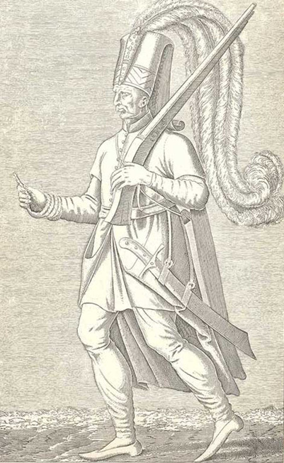
Yeniçeri
III. Selim tahta çıktığında (Nisan 1789); savaşamayan, eğitimsiz, disiplinden tamamen yoksun, ilk bahanede meydanı düşmana terk eden, topları bırakıp atlarına binerek kaçarken kendi ordugâhını ve yolda önüne çıkan köyleri yağmalayan, kapağı İstanbul’a attığında ise sahte kahramanlık hikâyeleri uydurarak, kabahati komutanlara ve ricâle yükleyen bir “yeniçeri ordusu” ile karşılaştı. Askerin perişan halini yazdığı hatt-ı hümâyûnlarından takip etmek mümkündür.
31 Ocak 1790’da yapılan Prusya ittifakı, ordunun durumunu yakından bilen ve bir an önce barıştan yana olan Şumnu meştâsındaki Sadrazam Cezayirli Gazi Hasan Paşa tarafından arzu edilen bir husus olmamış ve ittifak askerin muhalefetine rağmen yapılmıştı.100 Avusturya’nın Prusya tarafından zorlanması neticesinde yapılan Ziştovi Barışı (4 Ağustos 1791), düşman cephesini teke düşürmüş olmakla beraber, yaşanan ağır hezimetler ve en son Maçin’deki büyük bozgun (9 Temmuz 1791) sebebiyle, III. Selim’in bütün emir ve beklentilerinin aksine Rusya ile de acil bir barış kaçınılmaz olmuştu. Başta yeniçeri ağası olmak üzere bütün ocak ağalarının ve sair komutanların iştirakiyle Maçin sahrasında yapılan olağanüstü toplantıda (11 Ağustos 1791), ”gâvurun nizâmlı askerine bizim nizâmsız askerimizle” mukavemetin söz konusu olamayacağı ve içinde bulunulan perişanlık dâhilinde “kıyâmete kadar zafer yüzü görülemeyeceği”101 açıkça dile getirilerek, bu şartlar dâhilinde ordunun savaşamayacağının padişaha bildirilmesi Sadrazam Koca Yusuf Paşa’dan talep edildi ve bu hususta bizzat Vâsıf Efendi’nin eliyle tanzim edilen102 mahzar sûreti herkesin imzasıyla tasdik görmüş olarak İstanbul’a yollandı.103 Böylece, Osmanlı tarihinde emsâli olmayan bir “boykot” hadisesi yaşandı ve Rusya ile Yaş Barışı bu şartlar dâhilinde yapıldı (9 Ocak 1792).104
Nizâm-ı cedîd olarak anılan yenilenme ve yeniden yapılanma döneminin (1792-1807) bu hadise akabinde başlatıldığı ve III. Selim’in daha ordu dönüş hazırlıkları içindeyken önde gelen ricâlden “nizâm-ı devlete dâir layihalar” talep ettiği bilinmektedir. Ordunun İstanbul’a gelmesinden (2 Nisan 1792) bir müddet sonra başta Sadrazam Koca Yusuf Paşa olmak üzere boykot hadisesine karışan bütün ricâl ve ocak zabıtânı azledildiler. Boykot hadisesinin yeniçeri ağası olan Arapzâde Ahmed Ağa, “ordulu olmak hasebiyle vücûdu istiskal” edilmiş olarak vazifeden alındığında, III. Selim askerî tayinleri silsileyi yürütmeyerek, teknik tabiriyle “katar” dışına çıkarak yaptı. Sefer esnasında İstanbul’da bulunan Sekbanbaşı Mehmed Said Ağa yeniçeri ağası olarak atandı (24 Haziran 1792).
Başlayan askerî reformlarda ve 1805’ten sonra yeniçerilerin giderek artan hoşnutsuzluklarında, savaşlardaki başarısızlıkları ve nihayet bu boykot hadisesi devamlı yüzlerine vurulan bir ayıp olarak kullanıldı. Avrupa tarzında donatılmış, eğitilmiş ve disipline edilmiş “Nizâm-ı cedîd” ordusunun kurulması başlangıçtaki bu psikolojik hava içinde sessizlikle karşılandı. Yeni ordunun giderek güçlenmesi, sonunda eskisinin ortadan kaldırılması sonucunu verecek bir gelişme olacaktı. Böylece iki sistem arasında amansız bir düşmanlık gelişmeye başladı; öyle ki ihtiyaç anlarında bile bu iki kuvvetin bir arada kullanılması hiçbir zaman mümkün olmadı. Nizâm-ı cedîd’in geniş programı bütün kurumlarıyla devletin her sahada yapılanmasını ön görmekteydi: Timar sisteminin yoklanması, mahlûllere el konulması, maaş cüzdanlarının (esâme) satışının yasaklanması, her türlü yolsuzluğun önlenmesi, çağdaş askerî reformlar için yeni gelir kaynakları oluşturulması, hülâsa mülkî idare başta olmak üzere bütün sistemin elden geçirilmesi... Bütün bunların meydana getirdiği geniş hoşnutsuzluk, başlayan reform dönemini kısa zamanda ciddi meselelerle karşı karşıya getirdi. Reformların dar bir kadro tarafından yürütülmesi, yeni iktidar sahiplerinin eski alışkanlık ve kötü uygulamalardan kendilerini alamamaları, maaş ödemeleri başta olmak üzere tamamen ihmal edilen eski ocaklar ile imtiyazlı bir konumda bulunan yeni kurumlar arasındaki mevcut bölünmeyi daha da derinleştirdi.105
İç isyanlar (özellikle Vidin’de Pazvandoğlu Osman, Hicaz’da Vehhabîler), dışarıda patlayan savaşlar [Mısır’ın Fransızlar tarafından işgali (1798), İngiliz (1807-1809) ve Rus (1806-1812) savaşları] ve reformlar için sarf edilmesi gerekenlerin dışında bunlar için yapılmak zorunda kalan büyük harcamaların bütçeye getirdiği ek yük, siyâsette yaşananların yanında ekonomik durumda da büyük sıkıntılar ortaya çıkardı. Nihayet Şubat 1807’de bir İngiliz filosunun İstanbul önlerine kadar gelerek devleti tehdit etmesi,106 III. Selim’in 1805 ve 1806 senelerindeki yeniçeri muhalefetiyle tamamen sarsılmış bulunan otoritesine ölümcül bir darbe vurdu. Vehhabîlerin son bir iki senedir hüccâcın hac farizesini ifâsına engel olmaları ise saltanatının sonunu hazırladı. Ordunun Rus Seferi’ne çıkmak üzere İstanbul’dan ayrılması (12 Nisan 1807), Kabakçı Mustafa İsyanı (25-29 Mayıs) olarak bilinen ayaklanmaya fırsat verdi.107 III. Selim uzun seneler büyük masraflarla ve pek çok düşmanlıklar celbetmiş olarak hazırladığı orduyu ne savaşta ne de kendi hukukunu korumada kullanabilmiş olarak, reformlarını inkâr ve tahtını terk etti.
1807 ve 1808 seneleri içinde savaş hali devam etmesine rağmen, iki büyük ayaklanma ve iki padişahın (III. Selim ve IV. Mustafa) katli ve üç tebeddül (Selim, Mustafa ve II. Mahmud) yaşandı ve yeniçeriler, “Sened-i İttifak” belgesini108 de oluşturmuş (29 Ekim 1808) olmasından ötürü, kendisine duydukları düşmanlığın daha şiddetlendiği Alemdar Mustafa Paşa darbesini de üç ay içinde kanlı bir şekilde bertaraf ettiler (16 Kasım 1808). Bu son isyanlar yeniçeri nüfûzunu, XVII. yüzyıl ortalarındaki “yeniçeri ağaları saltanatı” dönemine hatırlatan bir tarzda arttırdı. 1807 isyanından sonra ulemanın da katılımıyla tanzim edilen bir Hüccet-i şer‘iyye ile (31 Mayıs 1807) darbeciler hakkında takipsizlik kararı alınarak, bir nev‘î dokunulmazlık zırhına büründürülmeleri ve hiçbir zaman sorumlu sayılmayacakları (“hiçbir vakitte mû‘âheze ve mes’ûl olmıya”) teminatı verilmesi,109 yakın zamanların darbecilerine âdeta örnek teşkil etti.110 Bu gelişmeler dâhilinde, yeniçeriler veya bu isim altında birleşenler kimler olursa olsun, bunların ortadan kaldırılmasının II. Mahmud siyasetinin baştan itibaren ana hedefi olmasına şaşmamak lâzımdır.
Değinilen bu son isyanlara katılanların kimlik bilgileri gayet kısıtlı olmakla beraber, genelde ocağın orta kademeden subaylarının çoğunlukta olduğu tesbit edilebilmektedir. Bunlar odabaşı, mütevelli, aşçı ustalar gibi neferât ile yakın temas içinde bulunan kişilerdir. Bunların çeşitli yolsuzluklara karışmaları söz konusu olup bir nev‘i dayanışma kasası olan orta sandıklarından maddî çıkar sağladıklarına, esâme satışlarından istifade ettiklerine dâir suçlamaların muhatabıdırlar.111 III. Selim’in Fransa ile yakınlaşmasından ötürü çıkan bir savaşın içinde ve ordu henüz sefere çıkmışken patlak vermesinden ötürü, hükümdar ve siyaset değişikliğinden en fazla istifade etmeleri söz konusu olacak olan ve muhalefeti el altından tahrik edip destekledikleri bilinen İngiliz ve Rus parmağının da hesaba katılması gereken 1807 isyanı, Kabakçı Mustafa ismiyle bağlantılı olarak anılsa da esas kadro orta rütbeli subaylardan oluşmaktaydı. Yeniçeri ordusunu cephede olduğundan İstanbul’da kalan ortaların mütevelli ve odabaşıları isyan boyunca halkı kendilerine katılmaya davet etmişler ve isyanı yönetmişlerdir. 1807’de olduğu gibi 1808 isyanında da aynı kadroların iş başında olduğu, 1826’daki son ayaklanmada ise bu türde pek az subayın bulunduğu, zirâ aradan geçen zaman içinde II. Mahmud’un daha önceki isyanlara karışmış olanların çoğunu ortadan kaldırdığı tesbit edilmiştir.112
Orta sandıklarından küçük esnafa, dara düşen halka fâizle borç verilmekte olmasının belirli bir taraftarlık hali oluşturduğu, geniş amele istihdam eden taşımacılık ve inşaat sektörünün de büyük ölçüde yeniçeriler tarafından denetim altında tutulduğu ayrıca vurgulanmaktadır. Hammal, kayıkçı, inşaat amelesi kethüdaları genelde kendi ortalarından kethüda seçmekteydiler. Kabakçı isyanında esnafın kepenk indirmeye ve isyana katılmaya çağrılması bu bağlantı sebebiyle daha da etkili olmuştur. III. Selim reformlarının mağdûru olmaları hissiyatıyla ulemanın kendi yanlarına çekilmesi önem arzeden bir husus olmaktaydı ve bu, başlarda katılmak istemez görüntüsüyle zevâhiri kurtarmaya çalışan Şeyhülislam Atâullah Mehmed Efendi olmak üzere başarıyla sağlanmıştı. Bununla beraber, 1807 ayaklanması yüksek ulemanın topyekûn destek verdikleri son isyan oldu.
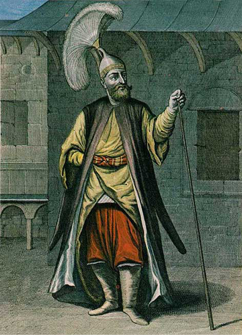
Çorbacı
Yeniçerilerin “Nizâm-ı cedid şeyhülislâmı” diye dillerine doladıkları Salihzâde Ahmed Esad Efendi, isyan akabinde azle uğramak bahasına 14 Kasım 1808’de başlayan büyük isyana katılmaya yanaşmamış olmasına rağmen, Anadolu ve Rumeli kazaskerlerinin destek vermeleri söz konusu olmuştur. 1808 Kasım ayaklanması, 1807 Mayıs isyanında el sürülmeyen Nizâm-ı cedîd ile ilgili bütün kışlaların ve sair binaların yakılıp yıkılmasıyla ve nihayetinde saraya da saldırılması sebebiyle kafesteki IV. Mustafa’nın da idamına neden olmuş olarak devam etti. Bu arada Selimiye kışlası yanında bulunan matbaanın da tahrib edilmiş olması (17 Kasım 1808), bunun mühendishanedeki eğitim için ders kitapları basılması yanında yeni düzeni tanıtan eserleriyle de Nizâm-ı cedîd’in etkin bir silahı ve kurumu olarak görüldüğüne işaret etmesi bakımından önem taşır. Bu hadise, 1730’daki yeniçeri isyanındaki yakıp yıkmalara rağmen Müteferrika matbaasına dokunulmamış olmasını olumlu bir davranış olarak sergilemesinin113 isabetli bir değerlendirme olamayacağını da gözler önüne serer zira yeniçerilerin 1730 ayaklanmasındaki bu davranışları sözü edilen matbaanın kendi düzenlerine yönelik bir tehdit unsuru teşkil etmemiş olmasından, hattâ daha büyük bir ihtimalle belki genelde varlığından bile bîhaber olmalarından kaynaklanmaktaydı. Asker ve ulema ittifakının arz ettiği büyük tehlikeleri bizzat yaşayarak gören II. Mahmud’un aldığı önlemler neticesinde 1826’daki son isyanda ulema -biraz zorlanmış da olsalar- tamamen padişahın yanında yer almak zorunda kalmıştır.
1791-1793 arası derlenmiş Kefalet Defterleri’nde yer alan İstanbul’daki 1.110 işyeri ve dükkân sahipleri için kullanılan beşe, odabaşı, bölükbaşı ve çavuş gibi sıfatlardan hareketle, dükkânların %40 kadarının yeniçeri bağlantılı olduğu ve bunların da yanlarında kendi cemaat ve ortalarıyla alakalı olanları çalıştırdıkları, diğer şehirlerde de konumlarından istifade etmek üzere yeniçerilerin ortak olarak tercih edildiğinin belirlenmesi,114 meseleyi aydınlatacak önemdedir. Özelikle kahve tüccarlarının yeniçerilerle ortaklığının gösterildiği Kahire için yapılan örneklemeler,115 bunların piyasadaki rollerine ışık tutar. Hülâsa, piyasaya “mafya-vârî” usûllerle el atan, devletin elini kolunu bağlayıp âdeta rehin alan, uzun zamanlardır askerlikle ilgisi kalmamış olduğu halde yenisinin kurulmasına da izin vermeyen, savaşlarda işe yaramayan, iç ayaklanmaları bastıramayan, isyan ve darbeleriyle ünlenmiş olarak her türlü yenilenmenin önünü tıkayan, Cevdet Paşa’nın dediğinin116 aksine, devletin kalbinde “seretân [kanser] illeti” değil, belki ameliyatla alındıktan sonra vücûdunun sıhhate kavuştuğu omuzundaki “ur” idi. Zira ortadan kaldırılan sadece askerî bir ocak değildir. Ortadan kaldırılan, muadilleri olan Rusya’da Büyük Petro’nun kanlı bir şekilde kökünü kazıdığı (1698) Streltsi askerlerine benzer şekilde imtiyazlarını büyük bir ihtirasla koruyan ve konumlarını zayıflatmaya yönelik bütün askerî reformlara şiddetle karşı çıkan,117 uzun dönemler boyunca yaşanmış olumsuzluklarıyla artık meşrûiyyetini kaybetmiş, devlete musallat bir örgütün bizâtihî kendisidir.
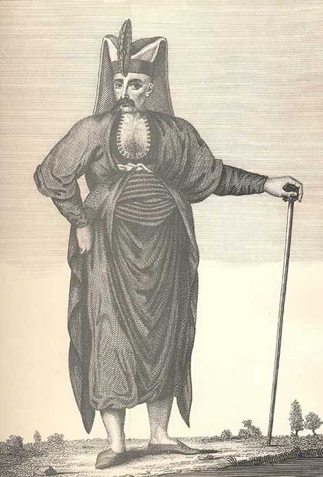
Yeniçeri Ağası
Asrî tarihçiler tarafından merkezî iktidar karşısında ve halkın yanında bir muhalefet odağı, bir sivil toplum örgütü gibi gösterilmek istenen Yeniçeri Ocağı’nın ilgasıyla halkın iktidar gücü karşısında korumasız kaldığı tarzındaki iddiaların, serdedilen tesbitler doğrultusunda herhalde bir değeri olmaması icâbeder. Yeniçeri meselesinin, “ehl-i ırz ahalinin kendi kazanlarını evlerinin önlerine çıkarmasıyla çözüleceğini” dile getiren II. Mahmud, “Vak‘a-i Hayriyye” olarak anılan hadisede (15-17 Haziran 1826) bunun gerçekleştiğini gördü ve bir önceki asrın sonundan beri akamete uğrayan Osmanlı yenilenme ve yeniden yapılanması önündeki en büyük engeli nihayet ortadan kaldırmaya muvaffak oldu. II. Mahmud, “...sadece savunma [amaçlı] değil, aynı zamanda kısmen [merkezî] iktidarın parçalanmasından kısmen de Avrupa devletlerinin askerî ve ekonomik müdahalelerinden kaynaklanan büyük iç sorunlarla da uğraşacak [modern] bir devlet oluşumu öngörmekteydi.”118 Yeniçeri Ocağı’nın kaldırılması akabinde bu gaye doğrultusunda girişilen köklü reformların, XX. yüzyılın ilk çeyreğine kadar uzanan o bütün felaketli gelişmelere rağmen, devleti yaklaşık 100 yıl kadar daha ayakta tutmuş olduğu unutulmamalıdır. Bu bağlamda, II. Abdülhamid’in, Meclis-i Mebûsân’ın açılışı münâsebetiyle irâd ettiği nutkunda (19 Mart 1877) dile getirdikleri, bu durumu âdeta teyid etmektedir:
“... Nihayet büyük pederim Sultan Mahmud Hân-ı merhûm devletimizin birkaç asırdan beri uğradığı inhitât ve tedennînin başlıca illet-i gā‘iyyesi olan nizâmsızlık ve ondan neş’et eden yeniçeri gā‘ilesini ortadan kaldırıp cism-i devlet ve milleti rahnedâr eylemiş olan fesâd ve ihtilâl dikenlerini ayıklamış ve Avrupa medeniyet-i hâzırasının en evvel mülkümüze idhâliçün bir kapı açmış idi.”119
Hülasa, Osmanlı Devleti’nin kuruluş ve yükselme dönemi aşamalarındaki savaşlarda kazanılan başarıların zamanla artan bir abartı içinde kendilerine maledilmiş olan yeniçeriler, devletin ve dolayısıyla askerî kurumların yeniden yapılanmasını gerektiren daha sonraki devirlerde yenilenmenin karşısında duran bir engel olarak ortaya çıkmış; çeşitli isyan, halʻ ve iclâsın aktörü olarak tarih sahnesinde giderek artan bir olumsuzluk içinde yer almaya başlamış, nihayet böylece geçen uzun bir dönemden sonra geciken reformların, yaşanan hezimetlerin ve kaybedilen toprakların sorumlusu olarak kanlı bir devlet darbesiyle tarihe intikal etmiştir. Yeniçeriliğin devlet örgüsünün bütün hücrelerine nüfûz etmiş olarak “asabiyet-i milliye” ile özdeşleşmiş olduğu savının120 ve bu haliyle belirli bir efsane halesine büründürülmüş olmasının bilimsel anlamda geçerliliği sorgulanmaya muhtaçtır.
Tablo 1
|
15-17. Yüzyıllarda Anadolu’da Devşirme Mahalleri |
|
Aksaray |
Cizre |
İznik |
Malatya |
Sivas |
|
Amasya |
Çemişgezek |
Karahisar |
Manyas |
Tokat |
|
Batum |
Çorum |
Karaman |
Maraş |
Trabzon |
|
Bayburt |
Diyarbakır |
Kayseri |
Mihaliç |
Zülkadriye |
|
Beyşehir |
Eğirdir |
Kemah |
Niğde |
Arapkir |
|
Bilecik |
Erzurum |
Kütahya |
Sinop |
|
|
Bursa |
Gemlik |
Lefke |
Sis |
Tablo 2
|
Türk Üzere Verilen Devşirme Oğlanları Osmanlılarda Sağlık, II, 26-28. Kaynak: 1491-1538 Tarihli Bursa Şer‘îye Sicilleri. |
|
Bursa Adaköyü’nde Hoşkadem bin Abdullah elinde hidmetiçün olan Hamza nâm sarışın, kısa boylu, gök gözlü, emred1 Bosnaviyyü’l-asl yeniçeri nasîr2 (نصير)zahmetinden vefât... (Şubat 1491). |
|
Bursa Bağçeköy’de Ali bin Abdullah elinde olan Hızır nâm buğday tenlü, yalın yüzlü, emred, kara gözlü Eflâkiyyü’l-asl yeniçeri nasîr zahmetinden vefât... (Mart 1491). |
|
Bursa Akçapınar nâm karyede Abdâl bin Mehmed elinde olan Hasan nâm kara yağız, elâ gözlü, orta boylu, yalın yüzlü, Bosnaviyyü’l-asl yeniçeri nasîr zahmetinden vefât... (Mart 1491). |
|
Bursa, Kite kadılığı Katırlıköy’den Yusuf bin Mustafa elinde olan Süleyman nâm sarışın, gözleri çukur, orta boylu, yalın yüzlü, Bosnaviyyü’l-asl yeniçeri tâ‘un4 illetinden vefât... (Mart 1491). |
|
Bursa’da Hacı İlyas oğlu Mehmed Çelebi elinde olan Yunus nâm sarışın, uzun boylu, Bulgariyyü’l-asl yeniçeri nasîr zahmetinden vefât... (Mart 1491). |
|
Bursa Armudköyü’nde Mevlânâ Bahârî elinde olan Kasım nâm kara yağız, kara gözlü, açık kaşlı, Bulgariyyü’l-asl acemî yeniçeri tâ‘un illetinden vefât... (Kasım 1491) |
|
Bursa Balıklıköyü’nde Hergeleci Hamza bin Abdullah elinde olan İlyâs nâm sarışın, gök gözlü, orta boylu, emred, Bosnaviyyü’l-asl oğlan tâ‘un illetinden vefât... (Aralık 1491). |
|
Bursa Serme nâm karyeden Hacı İdris bin Ali Fakîh elinde hidmetiçün olan Ali nâm buğday enlü, elâ gözlü, uzun boylu, Bulgariyyü’l-asl oğlan ve İskender nâm buğday enlü, tavîlü’l-kāme,5 ablah6 Bulgariyyü’l-asl oğlan ve Nasûh nâm, kara yağız emred Bulgariyyü’l-asl oğlan, üçü bir bile tâ‘ûn zahmetinden vefât... (Mart 1492). |
|
Bursa Kapluca müderrisi Mevlânâ Seydî’ye hidmetiçün verilen Hamza nâm sarışın, uzun boylu, gök gözlü, Bosnaviyyü’l-asl acemî yeniçeri tâ‘ûn zahmetinden vefât... (Temmuz 1492). |
|
Bursa Armudköyü’nde Yûsuf bir Abdullah elinde hidmetiçün olan acemî Hızır nâm kara yağız, gök elâ gözlü, Sırbıyyü’l-asl orta boylu oğlan tâ‘ûn zahmetinden vefât... (Eylül 1492). |
|
Bursa Fodra nâm köyde Solak İskender bin Abdullah hidmetiçün verilen Ahmed nâm asfer,7 ezrak,8 ablah, kasîrü’l-kad9 Sırbıyyü’l-asl oğlan nasîr zahmetinden dârü’ş-şifâda fevt... (Ocak 1503). |
|
Bursa Karamanköyü’nde İshâk bin Abdullah elinde Hamza nâm asfer, ahver,10 ablah, aksar,11 Rûmiyyü’l-asl oğlan Dârü’ş-şifâda nasîr zahmetinden fevt... (Ocak 1503). |
|
Ulufeci Evrenos’a hidmetçün verilen Hamza nâm eşhel,12 ablah, etemm13 Bulgariyyü’l-asl oğlan nasîr zahmetinden Bursa Dârü’ş-şifâsında fevt... (Ocak 1503). |
|
Şehzade Mahmud’a verilecek Acemî yeniçerilerden Mustafa nâm emred; uzun boylu, sarışın, Bosnaviyyü’l-asl oğlan Frenk uyuzu olduğu cihetten tîmâr içün Yılancı Kemal’e verilmiş ve tîmâr edilerek teslim edilmiş. (Mart 1504). |
|
Hamamlıkızıkköyü’nde Berek bin İsa’ya hidmetiçün verilen Hamza nâm sarışın, göz gözlü ve açık kaşlı, emred Bulgariyyü’l-asl oğlan tâ‘ûn zahmetinden vefat... (Mayıs 1504). |
|
Hacı İvâz Paşa Kızığı’nda Hacı Ahmed bin Abdullah elinde olan Hasan nâm sarışın, elâ gözlü, açık kaşlı, tavîlü’l-kāme, Bulgariyyü’l-asl emred oğlan ve bir dahi İskender nâm kara yağız, ahver, ahzer,14 emred, Rûmiyyü’l-asl oğlan tâ’ûn zahmetinden vefât... (Mayıs 1504). |
|
Gülpınarköyü’nde Hızır bin Mûsâ elinde olan Ali nâm sarışın, elâ gözlü, açık kaşlı, emred, Bulgariyyü’l-asl ve bir dahi Ahmed nâm buğday enlü, kara gözlü, çatık kaşlı, emred, Bulgariyyü’l-asl oğlanlar tâ’ûn zahmetinden vefat... (Mayıs 1504). |
|
Gülpınarköyü’nde Mahmud bin İlbeyi’nin elinde olan Hüseyin bin Abdullah nâm sarışın, elâ gözlü, açık kaşlı, emred Bosnaviyyü’l-asl oğlan tâ‘ûn zahmetinden fevt... (Mayıs 1504). |
|
Gülpınarköyü’nde Muharrem bin Hamza elinde olan Ali nâm sarışın, elâ gözlü, emred, Rûmiyyü’l-asl oğlan tâ‘ûn zahmetinden vefat... (Mayıs 1504). |
|
Bursa’da Bakkal Mehmed bin Hızır nâm kimesnenin zimmetinde Bulgariyyü’l-asl Hızır bin Abdullah ve Rûmiyyü’l-asl İlyâs bin Abdullah nâm acemî yeniçerileri olup ve zikr olunan yeniçeriler tâ‘ûn illetine mübtelâ olup ve bu marazdan fevt olmağla... (Şubat 1538). |
|
Bursa’da Sultan Mehmed Hân mahallesinde mütemekkin acemî yeniçerileri kethüdası Halil bin Aynî yedinde Mesîh bin Abdullah ve Hüseyin bin Abdullah nâm emred Bulgariyyü’l-asl acemî oğlanları olup, hâliyân mezbûr Mesîh nasîr zahmetine müptelâ olup ve mezkûr Hüseyin dahi tâ’ûn zahmetine mübtelâ olup, zikr olunan acemî oğlanlar bu marazlarından fevt... (Şubat 1538). |
|
Bursa Adaköy’de Budak bin Mahmud Fakîh elinde hidmetiçün olan Ağca nâm sarışın, elâ gözlü, yalın yüzlü, orta boylu Bosnaviyyü’l-asl yeniçeri katırdan düşüp öldü (Kasım 1491). |
Tablo 3
|
Yeni Devşirilen Çocukların Eşkal ve Aile Kayıtları Kaynak: Başbakanlık Osmanlı Arşivi, Bâb-ı Defterî, Müteferrik, nr. 36805 |
|
Köstendil Livâsı, Sene Ramazan 903/Nisan-Mayıs 1498 |
|
Ustrumca kazası Makriva köyü Yeno veled-i Dimito Elâ gözlü, açık kaşlı, ak benizli, iki kaşı arasında beni var, iki zülfü altında beni var, uzun boylu, mahbûbdur. |
|
Ustrumca kazası Makriva köyü Miloş veled-i Dragoy Kara gözlü, açık kaşlı, sağ kulağı delik, ak benizli, uzun boylu, mahbûbdur. |
|
Ternik köyü Pale veled-i Nikola Elâ gözlü, açık kaşlı, sol kulağı delik ve sağ gözü kuyruğunda beni var, sarışın, orta boylu. |
|
Gradiç köyü Görgo veled-i Yako Gök elâ gözlü, açık kaşlı, elinde nişanı var, ak benizli, uzun boylu. |
|
Gradiç köyü Dula veled-i Kostime Kara gözlü, açık kaşlı, sol gözünün altında nişan var ve sol kulağı delik, gendûm-gûn, uzun boylu. |
|
Kaloçinde köyü Bringo veled-i Vleis Gök elâ gözlü, çatık kaşlı, üst dudağı ve sağ yanında nişanı var. Ak benizli, uzun boylu. |
|
Tırhala sancağı Polana köyü Yani veled-i Gireç Gök elâ gözlü, sarışın, orta boylu. |
|
Yeno veled-i Kiro Gök gözlü, açık kaşlı, sol kaşının kuyruğunda nişan var, gendûm-gûn, uzun boylu. |
|
Nikola veled-i Rayko Elâ gözlü, çatık kaşlı, eğeninin sağ yanında nişanı var, ak benizli, uzun boylu. Karye-i Andro Nikodol Rale veled-i Yuvan Zeytin gözlü, açık kaşlı, üst dudağında nişanı var, ak benizli, orta boylu. |
|
Karye-i Sokolariçe İstoban veled-i Dimitri Gök elâ gözlü, çatık kaşlı, sol yanağında iki beni var, ak benizli, uzun boylu (Kendi isteğiyle kayd olundu.). |
|
Atina Yorgi veled-i Nikola, ana adı Mariya. Yaş 14. |
|
Atina Mihal veled-i Yorgi, ana adı Marya. Yaş 12. |
|
İşkodra livası, İpek, Görek Babiniç mahallesi Vajino veled-i Radosav Buğday enli, kara gözlü, açık kaşlı. Yaş 15. |
|
Hersek sancağı Nahiye-i Polimiye, an-cemâ‘at-i Knez Göre veled-i Dırak, Pladin veled-i Radosav, sarışın elâ gözlü, açık kaşlı. Yaş 14 (Enderun için ayrıldı.). |
|
Hersek sancağı Nahiye-i Polimiye, an-cemâ‘at-i Knez Göre veled-i Dırak, Pladin veled-i Radosav, sarışın elâ gözlü, açık kaşlı. Yaş 14 (Enderun için ayrıldı.). |
|
İşkodra Nahiyesi, Müselleman Köyü Görek veled-i Gön Kara yağız, kara gözlü, çatık kaşlı. Yaş 15. |
(Footnotes)
1 Henüz sakalları çıkmamış
2 Nasıl bir hastalık olduğu belirlenememektedir.
3 Beniz, ten rengi. Buğday benizli
4 Her türlü sârî (epidemik) hastalık, veba
5 Uzun boylu
6 Dolgun yuvarlak yüzlü, ablak suratlı
7 Sarışın, soluk yüzlü
8 Mavi [gözlü]
9 Kısa boylu
10 Beyaz yüzlü, güzel yüzlü
11 Çok kısa boylu
12 Ela gözlü, koyun gözlü
13 Kusursuz
14 Ufak gözlü
Yeniçeri Ocağı’nın Kaldırılması: Vak‘a-i Hayriyye
Yeniçeri Ocağı’nın kaldırılması (15-17 Haziran 1826) için kullanılan bir tabir olan Vak’a-i Hayriyye (hayırlı olay), II. Mahmud devrinin en önemli hadiselerinden ve Osmanlı tarihinin önde gelen dönüşüm safhalarından birini teşkil eder. II. Mahmud’un, devletin idarî sistemini Avrupa devletleri benzerinde merkeziyetçi bir düzeye getirilmesini ve bütün devlet kurumlarının zamanın gidişatına uygun bir şekilde yeniden inşasını hayatta kalmanın bir zarureti olarak görmesi, her şeyden önce yeni bir askerî yapılanmayı da beraberinde getirmekte ve bütün bunların karşısına en önemli engel olarak duran Yeniçeri Ocağı’nın ilgasını kaçınılmaz kılmaktaydı.
9 Ocak 1792’de Rusya ile yapılan Yaş Antlaşması’yla başlayan barış dönemine, askerî zafiyetin ne derece ciddi boyutlar arz ettiğinin idraki içinde girilmiş, böylece III. Selim devrini (1789-1807) simgeleyen yenilenme ve yeniden yapılanma dönemi (Nizâm-ı cedîd) başlamıştır. Ordunun, Rus Harbi henüz sona ermeden savaşamayacağını resmen bildirmesiyle (11 Ağustos 1792, Boykot Hadisesi) açığa çıkan askerî perişanlık, diğer kurumlar yanında özellikle Yeniçeri Ocağı’nın yeni bir düzene kavuşturulmasının önceliğini gözler önüne serdi. III. Selim ve IV. Mustafa’nın hayatına mal olan yenilenme bir dizi darbe (Kabakçı Mustafa, 1807) ve karşı darbelerle (Alemdar Mustafa Paşa, 1808) sona erdi. Siyasî istikrarsızlık II. Mahmud’un tahta çıkmasıyla (28 Temmuz 1808) durulmakla beraber devam etti. II. Mahmud, 1826 Haziran ayına kadar gelen bu uzun zaman içinde, hesaplı adımlar atarak bu ocağı tarihe intikal ettireceği güne hazırlanmakta olduğunu gizlemeyi başardı. Buna dâir almış olduğu önlemler, amcası (III. Selim) döneminde girişilen askerî yenilenmenin tahlilini iyi yaptığına, 1807 ve 1808 ayaklanmalarının sebeplerini çözümlediğine işaret etmektedir.
O döneme kadar çıkmış olan ayaklanmaların genelde yeniçeri ismiyle anılmakta olması, kendisini yanıltmadı ve bu isim altında toplumun çeşitli katmanlarından değişik unsurların bir araya gelmiş olduğunu iyi teşhis etti. Yeniçeri kışlalarının İstanbul’un merkezinde yer alması, halkla birlikte yaşamalarına ve onlarla beraber olmalarına olanak vermiş, giderek artan oranda şehir hayatının yönlendirilmesinde etkin bir rol oynamaya başlamışlardır. Öte yandan yeniçeri maaş kimlik belgelerinin (esâme) geniş kitleleri harekete geçiren bir unsur olduğu ve ellerinde bu belgelerin bulunduğu, genelde esnaf tanımlamasıyla takdim edilen kesimlerin “yeniçerilik“ gayreti içine girdikleri artık bilinen bir gerçek idi. Yeniçerilerin esnaflaşmaları, diğer bir ifadeyle sosyal bir kesimin etkin bir temsilcisi haline dönüşmeleri 17. yüzyıldan itibaren süratle artmış ve asrın sonlarına doğru loncalarda önemli sayılarda esnaf ve zanaatkâr yeniçeri yer almış bulunuyordu. İstanbul taşımacılığında önemli bir kitle oluşturan hammal ve kayıkçılar yanında çeşitli gündelik işlerde çalışan amelelerin de hemen tamamı yeniçeri veya yeniçeri muamelesi görenlerden (bunlara taslakçı denilmektedir) olmaları ve kethüdaların genelde yeniçeriler arasından seçilmesinden ötürü, bu kitleler yeniçeri zabitleri için gerektiğinde harekete geçirilecek önemli bir insan kaynağı oluşturmaktaydı.
Daha önceki ayaklanmalarda alt rütbelerdeki zabitlerin (odabaşı, mütevelli, aşçı ustaları) ocağı harekete geçirmede daha etkin oldukları görüldüğünden, II. Mahmud öncelikle bunların saf dışı edilmelerine girişmiştir. 1826 ayaklanmasında, 1808 Alemdar vakasının tersine orta rütbedeki subayların çok daha az sayılarda temsil edilmiş olması, böyle bir temizliğin başarıyla yürütüldüğüne işaret eder.121 İstanbul’da ve ocak içinde sorun çıkarabileceklerin ayıklanması, özellikle ellerinde bol miıktarda esâme bulunan orta dereceli zabıtânın tasfiyesi Ağa Hüseyin Paşa’nın122 yeniçeri ağalığı yaptığı dönemde (1823) büyük ölçüde halledildi. Genel tasfiyenin 1815’te yeniçeri ağası olan Seyyid Mehmed Ağa zamanında başladığı ve o zaman üç ustanın katledildiği, muhalif kulkethüdasının azl ve sürgün edildiği123, Ağa Hüseyin’in ise ocak içindeki bazı dik başlı ortaları Mora’ya veya bazı vilayetlere sevk ederek bertaraf ettiği bilinmektedir.124 II. Mahmud bu önemli yardımcısının başına bir iş gelmeden, kendisini Kocaeli ve Hüdavendigar sancakları ve Karadeniz boğazı ve Rumeli sahili muhafızlığına getirerek (1823), son darbenin vurulacağı güne hazırlanması için ocaktan ayırmıştır.125
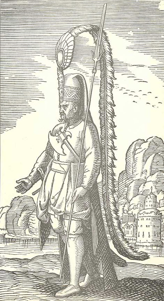
Yeniçeri
Ağa Hüseyin Paşa ile beraber, ocağın ortadan kaldırılması işinde kendisine önemli görev verilmiş olarak Boğaz’ın Anadolu sahili muhafızlığını yürüten Mehmed Reşid Paşa’nın da topladığı kuvvetlerin harekâta hazır hale gelmiş olmaları, II. Mahmud’u vaktin geldiğine ikna eden en önemli etkenler arasındadır. İsyanlarda öne çıkanların zaman içinde bilinçli bir şekilde ortadan kaldırılması veya sürgün edilmeleri, ocağa son darbenin vurulma işinin şaşkınlık meydana getirecek şekilde ve dört-beş saatlik bir çatışma sonunda “suhûlet” içinde geçmesinin126 başlıca sebebini teşkil eder, ancak bunun ocak zabitânı tarafından kavranamamış olması hayret vericidir. Daha sonraki bir tarihte (1857) Ahmet Vefik Paşa’nın ifadesiyle, olaya takaddüm eden dönemlerde komuta kademesinde yalnızca aptalların bırakılmış olduğunun tesbiti, bu durumu belki de açıklığa kavuşturmaktadır.127
Dönemin Avusturya elçisi Baron von Ottenfels’in Ağa Hüseyin Paşa’nın beyanına istinaden, II. Mahmud’un ölümden dönerek tahta çıktığı andan itibaren tuttuğu deftere ileride ortadan kaldırılması gerekenleri kaydettiğine dâir verdiği bilginin,128 1826’ya gelinceye kadarki ve ocağın ilgasından sonraki idamların eski hesapları görmek üzere en ücra köşelerde kendini unutturduklarını sananlara kadar uzanmış olmasından ötürü,129 mesnetsiz olduğunu söylemek mümkün değildir. Esâme gelirleri sebebiyle yeniçerilik gayreti güden kesimleri, esâme ödemelerine devam edileceği vaadiyle130 ayaklanma günlerinde ocak halkından ustalıkla ayrıştırması, zafere giden yolda zekice atılmış bir adım oldu.
II. Mahmud, ocağın içinde zamana yayılmış olarak sürdürülen bu temizlik işlemi yanında, daha önceki ayaklanmaların önemli bir öğretisi olmak üzere, ulemanın “askerle” işbirliği yapmasının önlenmesi aşamasını da başarıyla yürüttü. Bu kesimin de elinde önemli miktarlarda esâme bulunduğu ve bu sebepten ötürü yeniçerilerle işbirliği içine girdikleri, en son Alemdar zamanında esâmeleri iâde etmeleriyle ilgili başarısız bir girişim yaşandığı bilinmekteydi.131 26 Kasım 1825’te Mekkîzade Mustafa Âsım’ın yerine şeyhülislamlığa, ulemanın uyum sağlamasında katkı vermesi beklenen Kadızade Mehmet Tâhir’in getirilmesi son darbenin yakında vurulacağının işareti oldu. 1826 senesi içinde yapılan bir dizi gizli toplantılar ulemanın muvazzaf ve mütekaid üst düzey temsilcilerinin iştirakiyle gerçekleşti. Askerî eğitim almış bir güç oluşturmak maksadıyla Eşkinci adıyla anılacak muallem tüfekçi yazılmasına karar verildiğinde, bunun için hazırlanan kuruluş metninin (Eşkinci Layihası) görüşülmesi için şeyhülislam konağında üst düzey bürokratlar ve ocak ağalarıyla toplantı yapıldı (26 Mayıs) ve girişim oy birliğiyle kabul edildi. Yeni askerin isimlendirilmesinde III. Selim dönemi Nizâm-ı cedîd veya Alemdâr Mustafa Paşa’nın denemesi olan Sekban-ı cedid tanımlamasından uzak durulması, yine de bu işin ne anlama geldiğine dâir çağrışım yapılmasını engelleyemedi.
Yeniçeri
İstanbul’daki İngiliz elçisi Canning, 1821’den beri devam eden Rum ayaklanması gibi devleti zor durumlarda bırakan Batı destekli büyük bir isyanın ortasında, yeniçeri ayaklanmasına yol açacağı kesin olan böyle bir işe girişilmesini tehlikeli; iç ve dış şartlar bakımından zamansız olarak yorumlamakla beraber, II. Mahmud’u uzun zamandır beklediği vaktin nihayet geldiğine inandıran gelişme, muhakkak ki hem de bu isyan sebebiyle kamuoyunun değişen ruh halini çok iyi değerlendirmesinde yatmaktaydı. Diğer taraftan İstanbul’da devletin muzafferiyeti doğrultusunda tabir edilmiş olarak yaygınlık kazandırılan “sülehânın gördüğü rüyâlar”132 ahalinin maneviyatını yükseltmek için kullanılmaktaydı. Uzun zamandır devam eden Rum isyanının Batı tarzında eğitimli Mısır kuvvetlerinin müdahalesiyle kısa zamanda başarıyla bastırılma eğilimi içine girmesi ve bunun en belirgin göstergelerinden biri olarak önemli direniş merkezlerinden Misolongi’nin ele geçirilmesi (23 Nisan 1826), genel efkârı eğitimli askerin gerekliliğine ikna etmeye yetti ve vaktiyle böyle bir işe girişmiş olan III. Selim’in haklılığı hayıflanarak teslim edildi.133 Beş senedir devam eden isyanın bastırılamamasının bütün vebali, geçmişte yaşanmış bütün olumsuzluklarla beraber yeniçerilerin üzerinde kaldığından, gerekenin yapılması için beklenen psikolojik an yakalanmış oldu. 26 Mayıs’taki görüşmelerde düşmana aynen mukabele (mukâbele bi’l-misl) etmenin dinin bir emri olduğunun belirtilmesinin yanında, eğitilmiş Mısır kuvvetlerinin başarısına da dikkat çekilmiş olması bu anlamda önemlidir. 29 Mayıs’ta tekrarlanan genel toplantıda, daha önce hazırlanan hüccet okunmuş ve fetva sureti kaleme alınmıştır. Burada çağdaş savaş ihtiyaç ve eğitiminin vazgeçilmezliği tekrar dile getirilmiş; bundan yoksun olmanın yol açtığı yenilgiler hatırlatılmış ve yeniçerilerin Hıristiyan devletlere karşı durmaları şöyle dursun, Rum İsyanı’nı dahi bastırmaktan aciz olmalarına atıfta bulunulmuş ve “kendi reâyâsından isyân eden gâvurların dahi beş senedir haklarından gelinemediği” hususuna özellikle vurgu yapılmıştır.134 Dolayısıyla “Rum İsyanı” girişilecek askerî yenilenmede anahtar rol oynamaktaydı. Neticede, “nizâmât-ı askeriyye icrâ olunmadıkca â‘dâ-yı dîn ü devlet-i aliyyeye mukavemetin mümkün olmadığı” herkes tarafından itiraf edildi.
Hüccette ifadesini bulan dört husus (zarûret-i diniyye, fazîlet-i cihâd, ulülemrin irâdesine itaat, ulemanın re’y ve itfâsıyla tertîb olunmuş kavânin-i askeriyyeye riâyet) askerî temsilciler tarafından da onaylanmış ve imzalanan hüccet, fetva ve eşkinci layihası135 bir heyetle Ağakapısı’na gönderilmiş, burada yeniçeri ağası Mehmed Celaleddin tarafından ocak halkına duyurulmuş ve herkes tarafından kabul edilmiştir. Daha sonra yeni teşkilatla ilgili ilk atamalar yapılmış ve İbrahim Saib, Eşkinci Ocağı nazırı tayin edilmiştir. Yeniçerilerin de Rum İsyanı ve bunun talimli Mısır askerleri tarafından kısa zaman içinde bastırılması söyleminden etkilenmiş olarak, oluşan havanın esintisine kapıldıklarını, ancak kısa bir süre sonra verdikleri sözden dönmüş olmalarından hareketle, attıkları bu adımın ne anlama geldiğini geç kavradıklarını söylemek mümkündür. 12 Haziran’da Etmeydanı’nda başlatılan talimi136 “saf tutup, tüfek atmak” zannettikleri, talimden maksadın “gâvur talimi” olduğunun bilinmediği veya eşkinci neferâtı yazılımına gerek olmadığı ve yeniçeri ağasının yapılması gerekenleri “neferâta tenbih” etmesinin yeterli olduğu gibi, esas kaygılarını gizleyen itirazları yükselmeye başladı. Ancak bütün bunlar beklenmekteydi. II. Mahmud’un, “son bir neşter vurmak üzere azgın bir çıbanın etrafını lapayla olgunlaştıran usta bir cerrah gibi”,137 yeniçerileri son bir defa daha ayaklanmaları için el altından gizlice teşvik ettiği ve eşkinci uygulamasının onların böyle bir adım atmasına yol açması beklentisiyle tezgâlanan bir tuzak olduğuna şüphe yoktur.
13 Haziran akşam vakti Etmeydanı’nda toplanan yeniçeriler kazanlarını son defa olmak üzere tekrar ortaya çıkardılar. Önde gelen zevâtın hanelerinin basılması ve yağmalama hareketleri isyanın ilk icraatını teşkil etti. Yeniçeri ağası Celaleddin, Mısır kapukethüdası Necib ele geçirilemedilerse de haneleri yağma edildi, Beylerbeyi’ndeki yalısında bulunan Sadrazam Mehmed İzzet, Şeyhülislam Kadızade Mehmed Tâhir, Beşiktaş sahil sarayında oturan II. Mahmud ve deniz yoluyla gelmek durumunda olan sâir Bâbıâlî ricâli, özellikle Ağa Hüseyin Paşa marifetiyle çoktandır başlarına güvenilir adamların yerleştirildiği ve el altından gerekli temizliğin ve para dağıtımının yapıldığı boğaz yamaklarının138 III. Selim hadisesi sebebiyle üzerlerindeki lekeyi silmek söylemine sarılmış olarak, bu sefer isyana seyirci kalmalarından ötürü deniz ulaşımında herhangi bir engelle karşılaşmadan ertesi sabah (15 Haziran Perşembe) Topkapı Sarayı’na geldiler. Yeniçerilerle iş birliği yapmaktan kaçınan topçu, lâğımcı, humbaracı gibi teknik sınıflar ve kalyoncu neferâtı yanında, Ağa Hüseyin ve Mehmed Reşid paşalar böyle bir gün için hazırladıkları kuvvetleriyle intikal ettiler. II. Mahmud’un “kendi kazganlarını kapılarının önüne çıkartmalarını” beklediği İstanbul’un ehl-i ırz halkı ve yeniçerilerle kavgalı olan medrese talebeleri, mahalle imamlarının önderliğinde, “küffâr üzerine gider gibi” saraya doğru yöneldiklerinde, bu seferki ayaklanmanın daha öncekilerden farklı bir netice vereceği ilk andan itibaren açıkça görüldü.
Sefer kıyafetine bürünen II. Mahmud, kılıcını kuşanmadan önce tahtın tek varisi olan üç yaşındaki oğlu Abdülmecid’i yanına getirtmiş, onu bağrına basarak vedalaşmıştır.139 Canning’in 29 Mayıs tarihli raporunda, eşkinci projesi sebebiyle çıkacak bir ayaklanmanın bizzat padişahın hayatına kastedilebileceğine dikkat çekmesi, bu vedâlaşmayı daha da anlamlı kılmaktaydı. Zira artık kendisi hanedanın tek erkek üyesi değildi ve asiler karşısındaki muhtemel bir yenilgi halinde hayatta kalması, ancak kardeşine yaptığını tekrarlamasıyla mümkün olacaktı.
Saray depolarından, Alemdar’ın Sekbân-ı cedîd’inden arda kalanların dışında böyle bir günde kullanılmak üzere üç ay kadar önce Lüttich’ten (/Liége, Belçika) gizlice ithal edildiği ileri sürülen tüfeklerin dağıtılmasından,140 asilerin katline dâir fetva verilmesinden ve Sancak-ı şerîf’in çıkartılmasından sonra, başta sadrazam ve şeyhülislam olduğu halde mazûlleriyle birlikte önde gelen ulemanın ve Bâb-ı âlî ricâlinin tümünün ön saflarda yer aldığı binlerce insan, tekbîr sesleriyle Bâb-ı Hümâyûn’dan çıkarak Sultanahmed Camii’ne yöneldi ve burasının merkez ittihaz edilmesiyle askerî harekât başlatıldı. Bâb-ı Hümâyûn’a yakın bir binaya yerleşen II. Mahmud’un, gelişmeleri buradan takip etmesi güvenlik açısından daha uygun görüldü. Nitekim Sultanahmed çevresine kadar sokulup pusuya yatan bir grup yeniçerinin ani bir saldırıyla Sancak-ı şerîf’i ele geçirmek üzere yaptıkları plân, saraydan çıkış tablosunun mehâbeti karşısında akamete uğramış ve bunlar korkuyla savuşarak ortadan kaybolmuşlardır.141
Asilerin teslim olmaları için yapılan son çağrıyı da reddetmeleri üzerine, Ağa Hüseyin ve İzzet Mehmed paşalar Divanyolu üzerinden; humbaracı ve lağımcı neferâtı, medrese talebeleri ve ahaliden oluşan grup ise Bozdoğan Kemeri ve Etpazarı üzerinden hücuma geçmiş; kışlalar Topçubaşı Numan ve Yüzbaşı Kara Cehennem İbrahim Ağa’nın top atışlarıyla ateşe verilmiştir.142 Hadise İstanbul’daki elçilikler tarafından da helecanla takip edilmekteydi. Gelişmeler hakkında görgü şahidi bilgileri nakleden Rosen’a göre, “Ateş ve kılıç darbelerine karşı çaresiz bir şekilde direnen asilerin feryâdlarının uğultusu Haliç’in karşı kıyılarına aksetmekte ve Pera’da elçiliklerin ve yabancıların oturmakta olduğu mahallelerden duyulmaktaydı.”143 Hava karardığında Etmeydanı’ndaki kışlalar artık içi cesetlerle dolu, duman tüten bir yangın yeri haline gelmişti. Her türlü direniş kırılmış olmakla beraber, idamlar Cuma ve Cumartesi günü (17 Haziran) öğleye kadar devam etti.144 Şehrin bütün kapıları askerî müdahalenin başlatılmasıyla beraber (Perşembe günü öğleden sonra) kapalı tutulmaktaydı. Ancak yeniçerilerin büyük bir kısmı ya gizlenmiş veya daha önceden, hattâ çatışmalar başlamadan önce şehrin dışına çıkmış bulunuyordu. Atmeydanı’na sürüklenenler, burada kurulmuş olan bir divân-ı harbin karşısına çıkarılmakta ve genelde topluca yargılanmaktaydılar. Mahkeme huzuruna çıkartılmış olmak, suçlu bulunmak için yeterli bir sebep teşkil etmekteydi. Buraya getirilenlerin hepsi Sultan Ahmed Camii Hünkâr Mahfili altındaki mahzende boğularak idam edildi ve cesetleri önce meydana daha sonrada Marmara Denizi’ne atıldı.
Olayda idamlar dâhil çarpışmalar esnasında hayatını kaybedenlerin kesin sayısını tesbit etmek mümkün değildir ve veriler genelde tahmini hesaplamalara dayanır. Öncelikle hadise günü şehirdeki yeniçeri nüfusunun belirlenmesi icap eder ancak buna dâir de kesin bir sayı vermek imkânsız gibidir. Raporlarında hadiseyi nakleden Canning, toplam yeniçeri sayısını 70 bin olarak vermekle beraber, bunun 40 bininin yeniçeri esâmisine sahip olanlar, geriye kalan 30 bininin ise “gerçek” yeniçeri olduğunu tasrih eder.145 Ocağı ortadan kaldırmaya yönelik bir girişimin yalnızca İstanbul’da önemli bir nüfusun tepki vermesine yol açacak ciddi bir tehlikeyi beraberinde getirebileceği, esâmi sahiplerinin tahmini dahi olsa bu yüksek sayısı karşısında açıkça görülmekte ve iyi ayarlanmaması halinde girişilen işin ne derecelerde vahim sonuçlar verebileceği gözler önüne serilmektedir. Bu durumda esâmi ödemelerine devam edileceğine dâir yapılan ve esâmi sahiplerini yeniçerilerden ayrıştırarak, bunların toplumsal tabanını ortadan kaldırmayı amaçlayan vaadin ne kadar akıllıca bir önlem olduğu tekrar ortaya çıkmaktadır. Eşkinci layihasının kabulünden az bir zaman sonra hoşnutsuzluklarını belli etmeye başladıklarında yeniçerilerin yaydığı en önemli söylenti, devletin esâmileri kaldıracağına dâirdi ve dolayısıyla onlar da böylece esâmi sahibi halkın çıkarlarının zedeleneceği kaygısıyla ocak gayretkeşliğini devam ettirmelerini amaçlamaktaydılar.146
Çarpışmalar başladığında kışlalarda ne kadar yeniçeri olduğunun bilinmesi önemli olmakla beraber, bunu da kestirmek mümkün değildir; kesin olan, tahmini sayının çok altındaki bir kitlenin çatışmayı göze alarak kışlalarda kaldığıdır, hattâ çatışmalardan kaçıp gitmeleri için kuşatma altına alınan kışlanın arka tarafından bir çıkış yolu açık bırakılmıştır.147 Şehirde bulunan yeniçerilerin sayısını 10.000, başkaldıranları ise birkaç bin olarak tahmin eden Ahmed Vefik Paşa da bazı kapıların kasten açık bırakıldığına işaret etmektedir.148 Aynı şekilde yeniçerilerin çarpışmalardaki zayiatının tam olarak belirlenmesi de olanak dışıdır. Öte yandan ele geçirilerek idam edilenlerin miktarının da tartışılması gerekir. Bu bağlamda Esad Efendi’nin verdiği resmî bilgiler önemlidir, ancak sorgulanmalıdır. Çarpışmalarda ölenler hakkında bir sayı vermemekle beraber, ilk gün Sultanahmed’deki yargılamalarda idam edilenlerin sayısının 200’ü geçtiği, Ağakapusu önünde de 120 kadar idam gerçekleştiğini beyan etmiş olduğu halde,149 sonunda İstanbul ve sair yerlerde (memâlik-i sâ’ire) olmak üzere yaklaşık 6 bin olarak zikrettiği toplam sayının çatışma ve idamlar dâhil verilen genel zayiata işaret ettiği açıktır.150 Ancak bu sayı da mutlak doğru olarak kabul edilemez, zira bir müddet sonra halk arasında, padişahın 6 değil 33 bin yeniçeriyi amansızca katlettiği şayiâsının yayılması sağlanmıştır.151 Sayıların yüksek gösterilmesi gerçeği değil de etrafa dehşet vermek amacını taşır. Yine de ilk iki günkü idamlarla beraber İstanbul dışında da cereyan eden infâzların zaman içindeki toplamının üç-dört bin arasında kaldığı en gerçekçi varsayımdır. Olaydan seneler sonra serinkanlı bir değerlendirmede bulunmuş olarak verilen sayı bu anlamda önemlidir. Buna göre genel zayiat İstanbul’da 1800, taşrada 1200 kişidir.152 İlk gün devlet güçlerinden sadece 87 kişinin öldüğüne dâir yapılan beyanı,153 zayiatın kasıtlı olarak az gösterilmesi ihtimaline rağmen doğru kabul edecek olursak, o zaman kışlalarda çatışmayı göze alan yeniçerinin sayısının tahmin edilenden daha az olduğunu, birkaç bini geçmediğini ve bunların büyük bir kısmının daha önce çoktan dağılarak kaçtığını154 kabul etmek gerekecektir. Canning’in 22 Haziran tarihli raporunda idam edilenlerin sayısını 6 bin; 25 tarihli olanında ise 8 bin olarak vermesi155 resmî propagandanın sayılarla oynayan aldatıcı etkisinin göstergesidir. Hâfız İlyas’ın yarım saat içinde mukavemetleri kırılmış olan asilerin kışla meydanına doluştukları, bunların sayılarının 30 binden ziyade olduğu ve ekserisinin kılıçtan geçirildikleri, geri kalanların kaçmalarına göz yumulduğuna dâir duyuma dayanan kayıtlarını da bu anlamda değerlendirmek gerekir.156 Hülâsa, hadisenin icrâ ve inanılmazlığı yanında abartılan sayılarla daha da arttırılan dehşet havasının, toplum üzerinde idamların gerçek sayısından çok daha fazla etkili olduğunu söyleyebiliriz.
Ocağın gözden çıkartılmış olduğu, padişaha topçu ve humbaracı neferâtının eşlik ettiği cuma selâmlığında gözler önüne serildi ve akıbeti Cuma akşamı ve ertesi 17 Haziran Cumartesi sabahı Sultan Ahmed Camii’nde yapılan geniş katılımlı (ulema-yı izâm, vüzerâ, sudûr, mevâlî, hocalar, ricâl-i devlet, meşâyih-i cevâmi) toplantılarda ele alındı. Burada ocağın bütün sabıkasına ve isyanın başarılı ancak kanlı bir şekilde bastırılmış olmasına rağmen kadîmlik haysiyeti sebebiyle ilga edilmemesi gerektiğine dâir söylemlerin hâlâ zihin çelmekte olması dikkat çekicidir. Özelikle ulema kesimi bu telâkki içinde mütereddid davranmaktaydı. II. Mahmud’un saraya celbedilen ulemanın geceyi geçirmek üzere evlerine gitmelerine hangi endişe sâikiyle izin vermediği157 böylece daha iyi ortaya çıkmaktadır. Hattâ toplantıda bir ara ocağın ilgasından ziyade ıslâhı cihetine gidilmesi ağırlık kazanır gibi oldu.158 Bu hava Reisülküttap Mehmed Seydâ Efendi’nin ocağın yol açtığı fitne ve fesada, verdikleri sözlerini tutmadıklarına, yaşanan kanlı olayın düşmanlıklarını daha da arttıracağına ve bu fırsattan istifade edilmesine değinen sert bir konuşma yapmasıyla dağıldı ve ocağın ilgasına biraz da zorla karar verilmiş oldu. Öğle olmadan Beğlikçi Pertev Efendi tarafından hazırlanan fermân sureti Reis Efendi tarafından okunarak, Yeniçeri Ocağı’nın ilga edildiği ve yerine Asâkir-i mualleme-i mansûre-i Muhammediyye adıyla yeni bir ordunun kurulduğu dile getirildi ve bu karar cümle tarafından onay buldu (17 Haziran 1826). Padişahın tasdikinden geçerek son şeklini almış olan fermân öğleden sonra cami minberine çıkan Esad Efendi tarafından okundu ve yüzden fazla nüshası hazırlanarak mahalle imamlarına dağıtıldı ve bunlar vasıtasıyla her yerde ilan edildi.159
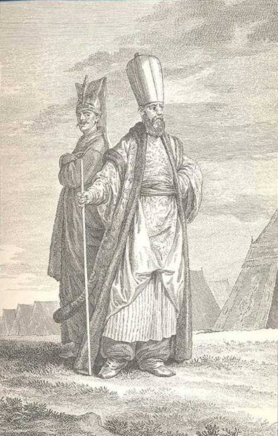
Yeniçeri Ağası
Yeniçeri ağalığı yerine seraskerlik makamı ihdas ile bu mevki önce Yeniçeri Ocağı’nın son ağası olan Mehmed Celaleddin Ağa’ya teklif edilmiş, kabulden kaçınması üzerine Kadıköy’de mütekaiden oturmakta olup ocağın temizlenmesinde hizmeti geçmiş olan eski ağalardan İsmail Ağa’nın adaylığı söz konusu olmuş, ancak II. Mahmud bu önemli makama, uhdesindeki mevcut sancaklar ve sürdürmekte olduğu muhafızlık aynen kalmak kaydıyla Ağa Hüseyin Paşa’yı tayin etmiştir. Bayezid’teki Eski Saray, seraskerlik makamına tahsis edilirken, Ağakapısı da meşihata mahsûs dâire olmak üzere hazırlandı, sadreyn ve İstanbul kadısı da buraya nakledilmiş olarak bu mekân âdeta tathîr ve takdis edildi.160 Şehzade Camii karşısındaki Eski Odalar ismiyle anılan yeniçeri kışlası olaydan birkaç gün sonra yıkıldı, arsası ev ve dükkân yapılmak üzere Sultan Ahmed Camii vakfına verildi, mevcut kışlası tamamen tahrib edilen Etmeydanı ismi ise Ahmediyye Meydanı’na tahvil edildi.
Yeniçerilerle ilgili resmî defterlerin ihrâkı yanında, mezartaşlarına kadar uzanan bir tahribatla nişâneleri tamamen silinmek istendi.161 Kendileriyle işbirliği içinde oldukları töhmetiyle Bektaşi tarikatı da bu gelişmelerden nasibini alarak “tashîh-i i’mân” etmeye mecbur bırakıldı.162 Bu arada asayiş ve güvenliğin sağlanması amacıyla birkaç ay içinde elli bine yakın başıboş nüfus şehirden sürüldü. Ödemelere devam edileceği ilan edilen esâmilere gelince, olaydan sonra bunların, yeni kurulan seraskerlik binasında özel memurlar tarafından yoklanarak, eski kâğıtların yeni senedlerle değiştirilmesine karar verildi. Ancak bu iş, esâmi sahiplerinin korkutulması, usandırılması ve nihayet yeniçeri gayretkeşliği gibi dehşet veren bir töhmet altına sokulması gibi yollarla çözülmeye çalışıldı ve herkesin ellerindeki kâğıtları kendiliğinden iâde veya imha etmek zorunda bırakılmasıyla kısa zamanda sonuçlandırıldı.163 Yeniçeri Ocağı’nın ilgasıyla, II. Mahmud’a devletin ikinci kurucusu sıfatını kazandıracak olan büyük dönüşümün önündeki son engel de kalkmış oldu.
Kaynaklar
Özcan, Abdülkadir, “Ağa Hüseyin Paşa”, DİA, 19, s. 3-4.
––––, “Eşkinci Ocağı”, DİA, 11, s. 471.
––––, “Asâkir-i Mansûre-i Muhammediye”, DİA, 3, s. 457-458.
––––, “Devşirme”, DİA, 9, s. 254-257.
––––, “Osmanlı Askerî Teşkilâtı”, Türkler ve Askerlik, Ed. Süleyman Kızıltoprak, İstanbul 2009, s. 239-312.
––––, “Buçuktepe Vak‘ası”, DİA, VI, 343-344.
Levy, Agvidor, The Military Policy of Sultan Mahmud II., 1808-1839, (Basılmamış doktora tezi), Harvard University, Chambridge 1968.
Vakʻanüvis Ahmed Lûtfi Efendi Tarihi, haz. Yücel Demirel, İstanbul 1999, VIII, 1271-1274.
Porter, David, Constantinople and its environs in a series of letters, II, New York 1835, s. 259-293.
Ahmed Cevdet Paşa, Tarih-i Cevdet, V-XII. İstanbul 1309.
––––, Tezâkir, 40-Tetimme. Yay. Cavid Baysun, Ankara 1986.
Ahmed Vâsıf, Muhassenât-ı asâkir-i cedîd. Bu eser yanlış bilinen marûf ismiyle Koca Sekbanbaşı Risalesi adı altında Abdullah Uçman tarafından yayınlanmıştır. İstanbul tz.
Çaksu, Ali, “Janissary Coffee House in Late Eighteenth-Century İstanbul”, Ottoman Tulips, Ottoman Coffee. Leisure and Lifestyle in the Eighteenty Century. Ed. Sajdi, Dana, London - New York 2007, s. 117-132.
Yaycıoğlu, Ali, “Sened-i ittifak (1808): Osmanlı İmparatorluğu’nda bir ortaklık ve entegrasyon denemesi”, Nizâm-ı Kadim’den Nizâm-ı Cedîd’e. III. Selim ve Dönemi. Ed. Seyfi Kenan, İstanbul 2010, s. 667-709.
André Raimond, Yeniçerilerin Kahvesi, çev. Alp Tümertekin, İstanbul 1999, s. 87-89.
Aysel Danacı Yıldız (haz.), Ubeydullah Kuşmânî, Ebûbekir Efendi, Asiler ve Gaziler: Kabakçı Mustafa İsyanı, Istanbul 2007.
––––, Vaka-yı Selimiyye or the Selimiyye Incident: A Study of the May 1807 Rebellion, basılmamış doktora tezi, Sabancı Üniversitesi, Ocak 2008.
––––, “Şeyhülislâm Şerifzâde Mehmed Ataullah Efendi, III. Selim ve Vak‘a-i Selimiyye”, Nizâm-ı Kadim’den Nizâm-ı Cedîd’e. III. Selim ve Dönemi. Ed. Seyfi Kenan, İstanbul 2010, s. 529-564.
Tezcan, Baki, The Second Ottoman Empire. Political and Social Transformation in the Early Modern World. Cambridge 2010.
Papoulia, Basilike D., Ursprung und Wesen der “Knabenlese” im osmanischen Reich, München 1963.
Betül Başaran, “III. Selim ve İstanbul Şehir Siyaseti, 1789-1792”, Osmanlı’da Asayiş, Suç ve Ceza, 18. -20. yüzyıllar, Derleyenler Néomi Lévy, Alexander Toumarkine. İstanbul tz, s. 116-134.
––––, Remaking the Gate of Felicity: Policing, Social Control, and Migration in Istanbul at the End of the Eighteenth Century, 1789-1793. basılmamış Doktora tezi, Chicago, Illionis 2006.
Brian L. Davies, “Rus Askeri Gücünün Gelişmesi 1453-1815”, Top, Tüfek ve Süngü. Yeniçağlarda Savaş Sanatı 1453-1815. İstanbul 2003, s. 154-188.
Cemal Kafadar, “On the Purity and Corruption of the Janissaries”, Turkisp Studies Association Bulletin, V, 1991, s. 273-279.
––––, “Yeniçeri nizamının bozulması üzerine”, Kim var imiş biz burada yoğ iken, Dört Osmanlı: Yeniçeri, Tüccar, Derviş ve Hatun. İstanbul 2009, 29-37; amlf.,
––––, “Yeniçeri”, İstanbul Ansiklopedisi, VII, 472-476.
––––, İki Cihan Âresinde. Osmanlı Devleti’nin Kuruluşu, çev. Ceren Çıkın, Çev. Kont. ve ed. Mehmed Öz. Ankara 2010; amlf., Cemal Kafadar, Janissary-Esnaf Relations, solidarty and conflict. McGill University (basılmamış master tezi), 1981.
Cengiz Kırlı, “Devlet ve İstatistik: Esnaf Kefalet Defterleri Işığında III. Selim İktidarı”, Nizâm-ı Kadim’den Nizâm-ı Cedîd’e. III. Selim ve Dönemi. Ed. Seyfi Kenan, İstanbul 2010, s. 183-251.
––––, The Struggle Over Space Coffeehouses of Ottoman Istanbul, 1780-1845, Binghamton University, doktora tezi 2000.
Cevdet Tarihi, XII, İstanbul 1309.
Deval, Charles, Deux années à Constantinople et en Morée (18255, 1826 ou Esquisses historiques sur Mahmoud, les Janissariers, les nouvelles troupes..., Paris 1828, s. 123-140.
Römer, Claudia, Osmanische Festungsbesatzungen in Ungarn zur zeit Murads III. Dargestellt anhand von Petitionen zur Stellenvergabe. Wien 1995.
Pipes, Daniel, Slave Soldiers and Islam. London 1981.
Porter, David, Constantinople and its environs in a series of letters, II, New York 1835, s. 259-293.
Erkan, Davut, II. Abdülhamid’in İlk Mabeyn Ferîki Eğinli Said Paşa’nın Hâtırâtı, I-II, (1876-1880). İstanbul 2011, s. 133.
Werner, Ernst, Büyük bir devletin doğuşu. Osmanlı feodalizminin oluşma süreci, I. Çev. O. Esen - Y. Öner. İstanbul, 1968.
Esad Efendi Tarihi, haz. Ziya Yılmazer, İstanbul 2000, tür. Yer; amlf., Üss-i Zafer, haz. Mehmet Arslan, İstanbul 2005.
Yi, Eunjeong, Guild Dynamics in Seventeenth Century Istanbul. Leiden 2004.
Yeşil, Fatih, Nizâm-ı cedid’den Yeniçeriliğin kaldırılışına Osmanlı kara ordusunda değişim. (1793-1826). Hacettepe Üniversitesi SBE. (Basılmamış doktora tezi), Ankara 2009.
Feridun M. Emecen, İmparatorluk Çağının Osmanlı Sultanları I. Bayezid (II)-Yavuz-Kanunî. İstanbul 2011.
––––, Osmanlı Klâsik Çağında Hanedan, Devlet ve Toplum, İstanbul 2011.
––––, Osmanlı Klasik Çağında Savaş, İstanbul 2010.
––––, Yavuz Sultan Selim, İstanbul 2010.
Sarıcaoğlu, Fikret, Kendi kaleminden bir padişahın portresi. Sultan I. Abdülhamid (1774-1789). İstanbul 2001.
Ágoston, “Gábor, Military Transformation in the Ottoman Empire and Russia, 1500-1800”, Kritika, Explorations in Russian and Eurasian History, 12, 2 (Spring 2011), s. 281-319.
––––, Barut, Top ve Tüfek. Osmanlı İmparatorluğu’nun askeri gücü ve silah sanayisi, çev. Tanju Akad, İstanbul 2006.
Noradounghian, Gabriel Effendi, Recueil d’actes internationauxde l’empire Ottoman, Paris 1897, I, 329.
Rosen, Georg, Geschichte der Türkei. Von dem Siege der Reform im Jahre 1826 bis zum Pariser Tractat vom Jahre 1856, I, Leipzig 1866.
Georgius de Hungaria, Tractatus de moribus, condictionibus et nequicia Turcorum. Yay. Reinhard Klockow, Köln-Weimar-Wien 1993.
Yılmaz, Gülay, The Economie and Social Roles of Janissaries in a 17th Century Ottoman City: The Case of Istanbul. University Montreal (basılmamış Doktora tezi). 2011.
Yıldız, Gültekin, Neferin Adı Var. Zorunlu askerliğe geçiş sürecinde Osmanlı devletinde siyaset, ordu ve toplum, (1826-1839). İstanbul 2009.
Karamuk, Gümeç, “Devşirmelerin hukuki durumları üzerine” çev. Mehmet Öz, Söğüt’ten İstanbul’a. Osmanlı devletinin kuruluşu üzerine tartışmalar. Ankara 2000, s. 555-572.
Káldy-Nagy, Gyula, “The First Centuries of the Ottoman Military Organization”, Acta Orientalis, XXXI/2 (1977), s. 147-183.
Hâfız Hızır İlyas Ağa, Osmanlı Sarayında Gündelik Hayat. Letâif-i‛ Vekâyi‛-i Enderûniyye. Haz. Ali Şükrü Çoruk, İstanbul 2011.
İnalcık, Halil, Osmanlı İmparatorluğu. Klâsik Çağ (1300-1600). Çev. Ruşen Sezer, İstanbul 2003.
Roemer, Hans Robert, Persien auf dem Weg in die Neuzeit. Iranische Geschichte von 1350-1750. Stuttgart, 1989.
Reindl-Kiel, Hedda, “Der Duft der Macht: Osmanen, islamische Tradition, muslimische Mächte und der Westen im Spiegel diplomatischer Geschenke,“Wiener Zeitschrift zur Kunde des Morgenlandes, Band 95, s. 195-258. Wien 2005.
Reed, Howard Alexa, The Destruction of the Janissaries by Mahmud II in June 1826. (Basılmamış doktora tezi), Princeton University. 1951.
Petrosyan, Irina Y. (haz.), Mebde-i Kanun: Yeniçeri Ocağı Tarihi, Moskova 1987.
Uzunçarşılı, İsmail. H., Osmanlı Devleti Teşkilatından Kapukulu Ocakları, I. Acemi Ocağı ve Yeniçeri Ocağı. Ankara 1943.
––––, Saray Teşkilatı, Ankara, 1945.
İzzî Tarihi, İstanbul 1199, s. 254.
Palmer, J. A. B., ”Yeniçerilerin Kökeni”, çev. Mehmet Öz, Söğüt’ten İstanbul’a. Osmanlı Devletinin Kuruluşu Üzerine Tartışmalar. Ankara 2000, s. 475-516.
Porter, James, Turkey; Its History and Progress, II, London 1854.
Krauter, Josef, Franz Freiherr von Ottenfels. Beiträge zur Politik Metternichs im griechischen Freiheitskampfes 1822-1832. Saltzburg 1913.
Hammer, Joseph von, Geschichte des osmanischen Reiches, I, Pesth 1834.
Beydilli, Kemal, “III. Selim: Aydınlanmış Hükümdar”, Nizâm-ı Kadim’den Nizâm-ı Cedîd’e. III. Selim ve Dönemi. Ed. Seyfi Kenan, İstanbul 2010, s. 27-57.
––––, “Kabakçı İsyanı Akabinde Hazırlanan Hüccet-i Şer‘iyye”, Türk Kültürü İncelemeleri Dergisi, 4 (İstanbul 2001), s. 31-48.
––––, “Küçük Kaynarca Antlaşması”, DİA, 26, s. 524-527.
––––, “Vak‘a-i Hayriyye”, DİA, 43, s. 454-457.
––––, “Yaş Antlaşması”, DİA, 43, s. 343-347.
––––, “Ziştovi Antlaşması”, DİA, 44.
––––, “Sekbanbaşı Risalesinin Müellifi Hakkında”, Türk Kültürü İncelemeleri, 12 (İstanbul 2005), s. 221-224.
Kreiser, Klaus - Ch. K. Neumann, Kleine Geschichte der Türkei, Stuttgart 2003.
Stein, Mark L., Osmanlı kaleleri. Avrupa’da Hudut Boyları, Çev. Gül Ç. Güven, İstanbul 2007.
Gross, Max L., Military reform in the Ottoman Empire : the military reforms of Sultan Mahmud II (1808-1839). (Yüksek lisans), American University. Beirut 1971.
Mehmed Dâniş, Yeniçeri ocağının kaldırılışı ve II. Mahmud’un Edirne seyahati.
Haz. Şamil Mutlu, Istanbul 1994.
Sunal, Mehmet Mert, “Nizâm-ı Cedîd Reformları Karşısında Yeniçeriler”, Nizâm-ı Kadim’den Nizâm-ı Cedîd’e. III. Selim ve Dönemi. Ed. Seyfi Kenan, İstanbul 2010, s. 497-527.
––––, Cauldron of Dissent: A Study of the Janissary Corps, 1807-1826. Binghamton üniversitesi, basılmamış doktora tezi, 2006.
Akdağ, Mustafa, “Yeniçeri Ocak Nizamının Bozuluşu”, ADTCFD, Ankara 1947, V, 291-313.
Mücteba İlgürel, “Yeniçeriler”, İA, XIII, 385-395.
Aktepe, Münir, Patrona İsyanı (1730), İstanbul 1958.
Nâima Tarihi, Haz. Mehmet İpşirli, I, Ankara 2007.
Senior, Nassau William, A Journal kept in Turkey and Greece. London 1859. Çev. Hüseyin Al. (Bir Klasik İktisatçı Gözüyle Osmanlı), İstanbul 2011.
Sakin, Orhan, Yeniçeri Ocağı Tarihi ve Yasaları, İstanbul 2011.
Çınar, Osman, Mehmed Emin Edîb Efendi’nin Hayatı ve Târîhi. MÜSBE, basılmamış doktora tezi, İstanbul 1999.
Osmanlılarda Sağlık, I-II. Ed. Coşkun Yılmaz – Necdet Yılmaz, İstanbul 2006.
Koçu, Reşad Ekrem, Yeniçeriler, İstanbul 1964.
Murphey, Rhoads, Osmanlı’da Ordu ve Savaş, 1500-1700. çev. Tanju Akad, İstanbul 2007;
––––, “Yeni Çeri”, İA, XI, 322-331.
Abou-el-Haj, Rifa‘at Ali, 1703 İsyanı. Osmanlı Siyasasının Yapısı, çev. Çağdaş Sümer, Ankara 2011.
––––, Modern Devletin Doğası. 16. Yüzyıldan 18. yüzyıla Osmanlı İmparatorluğu, Çev. Oktay Özel - Canay Şahin, Ankara 2000.
Selaniki Tarihi, I-II. Haz. Mehmed İpşirli, İstanbul 1989.
Aslantaş, Selim, Osmanlıda Sırp İsyanları. 19. yüzyılın şafağında Balkanlar. İstanbul 2007.
Vryonis, Speros, “Selçuklu Gulamı ve Osmanlı devşirmeleri”, çev. Mehmet Öz, Söğüt’ten İstanbul’a. Osmanlı Devletinin kuruluşu üzerine tartışmalar. Ankara 2000, s. 517-554.
Kızıltoprak, Süleyman, “Türk Askerî Tarihinde Memlûk Sistemi”, Türkler ve Askerlik, İstanbul 2009, s. 139-182.
Toroser, Tayfun (Yay.), Kavanin-i Yeniçeriyan. Yeniçeri Kanunları. İstanbul 2011.
Yücel, Yaşar (Haz.), Osmanlı Devlet Teşkilatına dair Kaynaklar: Kitabu Mesâlihi’l Müslimîn ve menâfi’i’l-Müminîn, Ankara 1988. s. 91-144.
1 İ. H. Uzunçarşılı, Kapukulu Ocakları, I, 5.
2 Murphey, “Yeniçeri”, s. 326
3 Kafadar, İki Cihan Âresinde
4 Papoulia, Knabenlese, s. 34-41
5 Karamuk, “Devşirmelerin Hukukî Durumu”, s. 563
6 Papoulia, Knabenlese, 4, n. 10
7 Emecen, Hanedan, s. 49
8 Uzunçarşılı, Saray Teşkilatı, s. 324
9 H. R. Roemer, Persien auf dem Weg in die Neuzeit, s. 313
10 Papoulia, Knabenlese, s. 57-58
11 Uzunçarşılı, Kapukulu Ocakları, I, 145
12 Papoulia, Knabenlese, s. 58-59
13 Noradounghian, Recueil, I, 329
14 Papulia, Knabenlese, 62-63.
15 Karamuk, “Devşirmelerin hukukî durumu”, s. 559.
16 Stephan Gerlach, Türkiye Günlüğü, I, 529.
17 Papoulia, Knabenlese, s. 109-116.
18 bk. Kitabu Mesâlihi’l-Müslimin ve Menâfi’i’l-Mü’minîn, 106-107
19 Uzunçarşılı, Kapukulu Ocakları, I, 145; Papoulia, Knabenlese, 67’de sehven 1395
20 Uzunçarşılı, Kapukulu Ocakları, I, 144; İnalcık, “I. Murad”, DİA, 31, 163; Kafadar, ocağın kuruluşu 1362-1380 arası: “Yeniçeri”, İstanbul Ansiklopedisi, VII, 472 ve devşirmenin başlaması en geç 1383-1387 arası: İki Cihan Âresinde, s. XXI.
21 Bir Yeniçerinin Hatıratı, s. 24.
22 E. Werner, Büyük Bir Devletin Doğuşu, I, s. 150-151.
23 Papoulia, Knabenlese, s, 91; E. Werner, Büyük Bir Devletin Doğuşu, I, 148.
24 Vryonis, “Selçuklu Gulamı ve Osmanlı Devşirmesi”, s. 518.
25 Uzunçarşılı, Kapukulu Ocakları, I, 14.
26 Papoulia, Knabenlese, s. 86.
27 Vryonis, “Selçuklu Gulamı ve Osmanlı Devşirmesi”, s. 539.
28 Uzunçarşılı, Kapukulu Ocakları, I, 93, 95.
29 Bir Yeniçerinin Hatıratı, s. XI-XII, 61-62.
30 Uzunçarşılı, Kapukulu Ocakları, I, 62, 340; Danişmend, Kronoloji, II, 372.
31 Eugenio Albèri, Relazioni, s. 397. Zikreden: Hedda Reindl-Kiel, „Der Duft der Macht: Osmanen, islamische Tradition, muslimische Mächte und der Westen im Spiegel diplomatischer Geschenke, “Wiener Zeitschrift zur Kunde des Morgenlandes 95 (2005), s. 201, dipnot 18.
32 Tractatus, s. 289.
33 Kafadar, “Yeniçeriler”, VII, 474.
34 Uzunçarşılı, Kapukulu Ocakları, I, 147-150.
35 Uzunçarşılı, Kapukulu Ocakları, I, 115-125, 138.
36 Bir Yeniçerinin Hatıratı, s. 81.
37 Murphey, Osmanlı’da Ordu ve Savaş, s. 59-66.
38 Murphey, Osmanlı’da Ordu ve Savaş, s. 69.
39 Uzunçarşılı, Kapukulu Ocakları, I, 79-81.
40 Uzunçarşılı, Kapukulu Ocakları, I, 69-70.
41 Murphey, “Yeniçeri”, 323-324; ayrıca İnalcık, Klâsik Çağ, s. 90.
42 Rifa‘at, Modern Devletin Doğası, s. 140.
43 Murphey, Osmanlı’da Ordu ve Savaş, s. 38-39; 67-68.
44 Gábor Ágoston, Barut, Top ve Tüfek, s. 50.
45 Papoulia, Knabenlese, s. 60.
46 Emecen, Sultan Selim, s. 114-117.
47 Emecen, Osmanlı Sultanları, I, 27.
48 Baki Tezcan, The Second Ottoman Empire, s. 115 vd.
49 Rifaat Ali el-Haj, 1703 İsyanı, s. 94 vd.
50 Emecen, Hanedan, s. 49.
51 Tezâkir, 40, 218-219.
52 Selim Aslantaş, Sırp İsyanları, s. 66 vd.
53 Rifa’at, Modern Devletin Doğuşu, s. 72.
54 Ali Yaycıoğlu, “Sened-i ittifak”, s. 680.
55 Baki Tezcan, The Second Ottoman Empire, s. 192-193 vd.
56 Ali Yaycıoğlu, “Sened-i ittifak”, s. 682.
57 Josef Krauter, Ottenfels, s. 5, 83.
58 Ali Yaycıoğlu, “Sened-i ittifak”, s. 667, 682
59 Krautel, Ottenfels, s. 33.
60 Krauter, Ottenfels, s. 32.
61 Krauter, Ottenfels, s. 19.
62 Emecen, Osmanlı Klasik Çağında Savaş, s. 34.
63 Emecen, Osmanlı Klasik Çağında Savaş, s. 35-36, 38.
64 Emecen, Osmanlı Klasik Çağında Savaş, s. 41.
65 Gábor Ágoston, Barut, Top ve Tüfek, s. 47.
66 Emecen, Osmanlı Klasik Çağında Savaş, s. 180-200; Gábor Ágoston, Barut, Top ve Tüfek, s. 46-47.
67 Gyula, Káldy-Nagy, “Ottoman Military Organization”, s. 167.
68 Gábor Ágoston, Barut, Top ve Tüfek, s. 49, 61.
69 Murphey, “Yeniçeri”, s. 324.
70 Brian L. Davies, “Rus Askeri Gücünün Gelişmesi”, s. 161-163; Gábor Ágoston, “Military Transformation in the Ottoman Empire and Russia”, s. 292 vd.
71 Uzunçarşılı, Kapukulu Ocakları, I, 397.
72 Kapukulu Ocakları, I, 192.
73 Hammer, GOR, I, 727.
74 Nâimâ Tarihi, II, 487; Uzunçarşılı, Kapukulu Ocakları, I, 178.
75 Selâniki Tarihi, II, 220-221, 278.
76 Cevdet Tarihi, XII, 170.
77 Uzunçarşılı, Kapukulları, I, 179,
78 Abdülkadir Özcan, “Osmanlı Askerî Teşkilâtı”, s. 258 vd.
79 Nâimâ Tarihi, I, 70.
80 İzzî Tarihi, s. 254.
81 Murphey, “Yeni Çeri”, s. 323; A. Özcan, “Osmanlı Askerî Teşkilâtı”, s. 252 vd.
82 Kafadar, “Yeniçeri Nizamının Bozulması Üzerine”, s. 29-37.
83 Selaniki Tarihi, II, 515-516; ayrıca Baki Tezcan, The Second Empire, s. 198 vd.
84 Neumann, Kleine Geschichte der Türkei, s. 265.
85 Akdağ, “Yeniçeri Ocak Nizâmının Bozuluşu”, s. 292.
86 M. Mert Sunar, “Nizâm-ı Cedîd Reformları Karşısında Yeniçeriler”, s. 500-501.
87 Akdağ, “Yeniçeri Ocak Nizâmının Bozuluşu”, s. 293.
88 Akdağ, “Yeniçeri Ocak Nizâmının Bozuluşu”, s. 298.
89 A. Vâsıf, Muhassenât-ı Asâkir-i Cedîd [Sekbanbaşı Risalesi], s. 92-93.
90 Eunjeong Yi, Guild Dynamics in Seventeenth Century Istanbul.
91 Cengiz Kırlı, “Esnaf Kefâlet Defterleri Işığında”, s. 196-197.
92 Mert Sunal, “Nizâm-ı Cedîd Reformları Karşısında Yeniçeriler” s. 502.
93 Kafadar, “Yeniçeri Nizamının Bozulması Üzerine”, s. 33-34.
94 “Yeniçeri Ocak Nizâmının Bozuluşu”, s. 297-301.
95 Beydilli, “III. Selim”, s. 44-45.
96 Cengiz Kırlı, “Esnaf Kefâlet Defterleri Işığında”, s. 184, 186.
97 Fikret Sarıcaoğlu, I. Abdülhamid, s. 249-250.
98 R. E. Koçu, Yeniçeriler, s. 289 vd.
99 M. Mert Sunal, “Nizâm-ı Cedîd Reformları Karşısında Yeniçeriler”, s. 509.
100 Beydilli, 1790 İttifakı, s. 57 vd.
101 Vâsıf, Muhassanât-ı Asker-i Cedîd, 61; Cevdet Tarihi, V, 162-163.
102 Beydilli, “Sekbanbaşı Risalesinin Müellifi”, s. 221, 223.
103 Metin için b. Edîb Tarihi, s. 242-247.
104 Ziştovi ve Yaş antlaşmaları için b. Kemal Beydilli, DİA, 43.
105 M. Mert Sunal, “Nizâm-ı Cedîd Reformları Karşısında Yeniçeriler” s. 510-511.
106 Fatih Yeşil, “İstanbul önlerinde bir İngiliz filosu: Uluslar arasmı bir krizin siyasi ve askeri anatomisi”, Nizâm-ı kadîm’den Nizâm-ı cedîd’e III. Selim ve Dönemi. Ed. Seyfi Kenan, İstanbul 2010, s. 391-495.
107 Aysel Yıldız Danacı (Haz.), Ubeydullah Kuşmânî, Ebûbekir Efendi, Asiler ve Gaziler: Kabakçı Mustafa Risalesi. İstanbul 2007.
108 Bunun için b. Ali Akyıldız, “Sened-i İttifâk’ın ilk tam metni”, İslâm Araştırmaları Dergisi, İstanbul 1998, sayı 2, s. 209-222.
109 Beydilli, “Hüccet-i Şer‘iyye”, s. 33-48.
110 1730 Patrona Halil İsyanı’nda da elebaşıların sorumluktan kurtulmak üzere bu şekilde teminat talebinde bulunuldukları ve yalnızca şeyhülislâm ve İstanbul kadısının kefaletleriyle böyle bir garantinin kendilerine verildiği bilinmekle beraber, (Münir Aktepe, Patrona İsyanı, s. 163) bunun sözlü olarak yapıldığı ve yazılı-mühürlü bir hüccet şeklinde tanzimi söz konusu olmamıştır.
111 M. Mert Sunal, “Nizâm-ı Cedîd Reformları Karşısında Yeniçeriler”, s. 520.
112 M. Mert Sunal, “Nizâm-ı Cedîd Reformları Karşısında Yeniçeriler”, s. 520 vd.
113 Kafadar, “Yeniçeriler”, s. 475.
114 Betül Başaran, “III. Selim ve İstanbul Şehir Siyaseti”, s. 123-124.
115 Raymond Yeniçerilerin Kahiresi, s. 87-89.
116 Tezâkir, 40, s. 219.
117 Gabor, Osmanlı’da Strateji ve Askerî Güç, s. 250.
118 Rifa‘at, Modern Devletin Doğuşu, s. 120.
119 Davut Erkan, Eğinli Said Paşa’nın Hatırâtı, s. 133.
120 Cevdet Paşa, Tezâkir, 40, s. 219.
121 Sunar, Cauldron of Dissent, s. 111.
122 Biyografisi için ayrıca bk. Lûtfi Tarihi, VIII, 1271-1274; David Porter, Constantinople and its environs in a series of letters, II, s. 259-293.
123 Sunar, Cauldron of Dissent, s. 178.
124 Gross, Military reform, s. 152.
125 Rosen, Geschichte der Türkei, I, 9.
126 Cevdet Tarihi, XII, 164.
127 Nassau William, Osmanlı, s. 127.
128 Krauter, Ottenfels, s. 177; Yıldız, Neferin adı Var, s. 39.
129 Rosen, Geschichte der Türkei, I, 19.
130 Esad Efendi Tarihi, s. 775.
131 Yıldız, Neferin Adı Var, s. 19.
132 Cevdet Tarihi, XII, 157.
133 Krauter, Ottenfels, 170; Rosen, Geschichte der Türkei, I, 8.
134 Yıldız, Neferin Adı Var, 20-24.
135 Metin için b. Esad Efendi Tarihi, s. 577-586.
136 Esat Efendi Tarihi, s. 607.
137 Rosen, Geschichte der Türkei, I, 11.
138 Krauter, Ottenfels, s. 176.
139 Rosen, Geschichte der Türkei, I, 13.
140 Fatih Yeşil, Nizâm-ı cedid’den Yeniçeriliğin Kaldırılışına, s. 264.
141 Cevdet Tarihi, XII, 160.
142 Esad Efendi, Üss-i Zafer, s. 70-71.
143 Rosen, Geschichte der Türkei, I, 17.
144 Esad Efendi Tarihi, s. 611.
145 Yıldız, Neferin Adı Var, s. 37.
146 Uzunçarşılı, Kapıkulu Ocakları, I, 59; Fatih Yeşil, Nizâm-ı cedid’den Yeniçeriliğin Kaldırılışına, s. 161-162.
147 James Porter, Turkey, II, 279.
148 Nassau William, Osmanlı, s. 127.
149 Esad Efendi Tarihi, s, 611.
150 Esad Efendi Tarihi, s. 647.
151 Rosen, Geschichte der Türkei, I, 17.
152 James Porter, Turkey, 1854, II, 280.
153 Rosen, I, 15.
154 Nassau William, Osmanlı, s. 127.
155 Yıldız, Neferin Adı Var, s. 37.
156 Letâif-i vekâyi‘-i Enderûniyye, s. 408-409.
157 Esad Efendi, Üss-i Zafer, s. 106.
158 Esad Efendi Tarihi, s. 614; Cevdet Tarihi, XII, 167.
159 Esad Efendi Tarihi, s. 614; Cevdet Tarihi, XII, 166-168.
160 Esad Efendi, Üss-i Zafer, s. 158-161.
161 Rosen, Geschichte der Türkei, I, 178.
162 Esad Efendi, Üss-i Zafer, s. 173-175.
163 Esad Efendi Tarihi, s. 775-776.